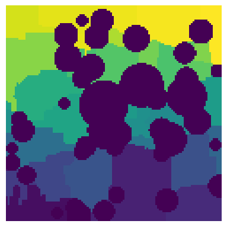
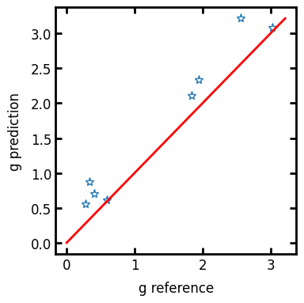

<!DOCTYPE html>


<html lang="en" data-content_root="../../../" >

  <head>
    <meta charset="utf-8" />
    <meta name="viewport" content="width=device-width, initial-scale=1.0" /><meta name="viewport" content="width=device-width, initial-scale=1" />

    <title>diffusive_size_factor_AI &#8212; PoreSpy  documentation</title>
  
  
  
  <script data-cfasync="false">
    document.documentElement.dataset.mode = localStorage.getItem("mode") || "";
    document.documentElement.dataset.theme = localStorage.getItem("theme") || "";
  </script>
  <!--
    this give us a css class that will be invisible only if js is disabled
  -->
  <noscript>
    <style>
      .pst-js-only { display: none !important; }

    </style>
  </noscript>
  
  <!-- Loaded before other Sphinx assets -->
  <link href="../../../_static/styles/theme.css?digest=8878045cc6db502f8baf" rel="stylesheet" />
<link href="../../../_static/styles/pydata-sphinx-theme.css?digest=8878045cc6db502f8baf" rel="stylesheet" />

    <link rel="stylesheet" type="text/css" href="../../../_static/pygments.css?v=03e43079" />
    <link rel="stylesheet" type="text/css" href="../../../_static/copybutton.css?v=76b2166b" />
    <link rel="stylesheet" type="text/css" href="../../../_static/mystnb.8ecb98da25f57f5357bf6f572d296f466b2cfe2517ffebfabe82451661e28f02.css" />
    <link rel="stylesheet" type="text/css" href="../../../_static/graphviz.css?v=4ae1632d" />
    <link rel="stylesheet" type="text/css" href="../../../_static/sphinx-design.min.css?v=95c83b7e" />
    <link rel="stylesheet" type="text/css" href="../../../_static/css/custom.css?v=78389542" />
  
  <!-- So that users can add custom icons -->
  <script src="../../../_static/scripts/fontawesome.js?digest=8878045cc6db502f8baf"></script>
  <!-- Pre-loaded scripts that we'll load fully later -->
  <link rel="preload" as="script" href="../../../_static/scripts/bootstrap.js?digest=8878045cc6db502f8baf" />
<link rel="preload" as="script" href="../../../_static/scripts/pydata-sphinx-theme.js?digest=8878045cc6db502f8baf" />

    <script src="../../../_static/documentation_options.js?v=5929fcd5"></script>
    <script src="../../../_static/doctools.js?v=9bcbadda"></script>
    <script src="../../../_static/sphinx_highlight.js?v=dc90522c"></script>
    <script src="../../../_static/clipboard.min.js?v=a7894cd8"></script>
    <script src="../../../_static/copybutton.js?v=30646c52"></script>
    <script src="../../../_static/design-tabs.js?v=f930bc37"></script>
    <script type="application/vnd.jupyter.widget-state+json">{"state": {"a7508ca3e402482cb49a047c4da659e2": {"model_name": "LayoutModel", "model_module": "@jupyter-widgets/base", "model_module_version": "2.0.0", "state": {"_model_module": "@jupyter-widgets/base", "_model_module_version": "2.0.0", "_model_name": "LayoutModel", "_view_count": null, "_view_module": "@jupyter-widgets/base", "_view_module_version": "2.0.0", "_view_name": "LayoutView", "align_content": null, "align_items": null, "align_self": null, "border_bottom": null, "border_left": null, "border_right": null, "border_top": null, "bottom": null, "display": null, "flex": null, "flex_flow": null, "grid_area": null, "grid_auto_columns": null, "grid_auto_flow": null, "grid_auto_rows": null, "grid_column": null, "grid_gap": null, "grid_row": null, "grid_template_areas": null, "grid_template_columns": null, "grid_template_rows": null, "height": null, "justify_content": null, "justify_items": null, "left": null, "margin": null, "max_height": null, "max_width": null, "min_height": null, "min_width": null, "object_fit": null, "object_position": null, "order": null, "overflow": null, "padding": null, "right": null, "top": null, "visibility": null, "width": null}}, "e5ffb598a08c487b9faf80208f5c885b": {"model_name": "ProgressStyleModel", "model_module": "@jupyter-widgets/controls", "model_module_version": "2.0.0", "state": {"_model_module": "@jupyter-widgets/controls", "_model_module_version": "2.0.0", "_model_name": "ProgressStyleModel", "_view_count": null, "_view_module": "@jupyter-widgets/base", "_view_module_version": "2.0.0", "_view_name": "StyleView", "bar_color": null, "description_width": ""}}, "5eeae8dd27d3438895743b30a38659cd": {"model_name": "FloatProgressModel", "model_module": "@jupyter-widgets/controls", "model_module_version": "2.0.0", "state": {"_dom_classes": [], "_model_module": "@jupyter-widgets/controls", "_model_module_version": "2.0.0", "_model_name": "FloatProgressModel", "_view_count": null, "_view_module": "@jupyter-widgets/controls", "_view_module_version": "2.0.0", "_view_name": "ProgressView", "bar_style": "", "description": "", "description_allow_html": false, "layout": "IPY_MODEL_a7508ca3e402482cb49a047c4da659e2", "max": 8.0, "min": 0.0, "orientation": "horizontal", "style": "IPY_MODEL_e5ffb598a08c487b9faf80208f5c885b", "tabbable": null, "tooltip": null, "value": 8.0}}, "0656838e350f4bdc82fb00f8d2220e24": {"model_name": "LayoutModel", "model_module": "@jupyter-widgets/base", "model_module_version": "2.0.0", "state": {"_model_module": "@jupyter-widgets/base", "_model_module_version": "2.0.0", "_model_name": "LayoutModel", "_view_count": null, "_view_module": "@jupyter-widgets/base", "_view_module_version": "2.0.0", "_view_name": "LayoutView", "align_content": null, "align_items": null, "align_self": null, "border_bottom": null, "border_left": null, "border_right": null, "border_top": null, "bottom": null, "display": null, "flex": null, "flex_flow": null, "grid_area": null, "grid_auto_columns": null, "grid_auto_flow": null, "grid_auto_rows": null, "grid_column": null, "grid_gap": null, "grid_row": null, "grid_template_areas": null, "grid_template_columns": null, "grid_template_rows": null, "height": null, "justify_content": null, "justify_items": null, "left": null, "margin": null, "max_height": null, "max_width": null, "min_height": null, "min_width": null, "object_fit": null, "object_position": null, "order": null, "overflow": null, "padding": null, "right": null, "top": null, "visibility": null, "width": null}}, "d7fd0e08b4df47cdb749c05bf1481158": {"model_name": "HTMLStyleModel", "model_module": "@jupyter-widgets/controls", "model_module_version": "2.0.0", "state": {"_model_module": "@jupyter-widgets/controls", "_model_module_version": "2.0.0", "_model_name": "HTMLStyleModel", "_view_count": null, "_view_module": "@jupyter-widgets/base", "_view_module_version": "2.0.0", "_view_name": "StyleView", "background": null, "description_width": "", "font_size": null, "text_color": null}}, "bdb5fd6e01fa46cdbe403abdf2988b88": {"model_name": "HTMLModel", "model_module": "@jupyter-widgets/controls", "model_module_version": "2.0.0", "state": {"_dom_classes": [], "_model_module": "@jupyter-widgets/controls", "_model_module_version": "2.0.0", "_model_name": "HTMLModel", "_view_count": null, "_view_module": "@jupyter-widgets/controls", "_view_module_version": "2.0.0", "_view_name": "HTMLView", "description": "", "description_allow_html": false, "layout": "IPY_MODEL_0656838e350f4bdc82fb00f8d2220e24", "placeholder": "\u200b", "style": "IPY_MODEL_d7fd0e08b4df47cdb749c05bf1481158", "tabbable": null, "tooltip": null, "value": "diffusive_size_factor_DNS:\u2007100%"}}, "4db237a5018549ebaa2dcd2f26ef36bc": {"model_name": "LayoutModel", "model_module": "@jupyter-widgets/base", "model_module_version": "2.0.0", "state": {"_model_module": "@jupyter-widgets/base", "_model_module_version": "2.0.0", "_model_name": "LayoutModel", "_view_count": null, "_view_module": "@jupyter-widgets/base", "_view_module_version": "2.0.0", "_view_name": "LayoutView", "align_content": null, "align_items": null, "align_self": null, "border_bottom": null, "border_left": null, "border_right": null, "border_top": null, "bottom": null, "display": null, "flex": null, "flex_flow": null, "grid_area": null, "grid_auto_columns": null, "grid_auto_flow": null, "grid_auto_rows": null, "grid_column": null, "grid_gap": null, "grid_row": null, "grid_template_areas": null, "grid_template_columns": null, "grid_template_rows": null, "height": null, "justify_content": null, "justify_items": null, "left": null, "margin": null, "max_height": null, "max_width": null, "min_height": null, "min_width": null, "object_fit": null, "object_position": null, "order": null, "overflow": null, "padding": null, "right": null, "top": null, "visibility": null, "width": null}}, "0f874ea65ecc4873b1ddff45a7f54b8f": {"model_name": "HTMLStyleModel", "model_module": "@jupyter-widgets/controls", "model_module_version": "2.0.0", "state": {"_model_module": "@jupyter-widgets/controls", "_model_module_version": "2.0.0", "_model_name": "HTMLStyleModel", "_view_count": null, "_view_module": "@jupyter-widgets/base", "_view_module_version": "2.0.0", "_view_name": "StyleView", "background": null, "description_width": "", "font_size": null, "text_color": null}}, "6a01e5287cf54b359d83e7ac0371f091": {"model_name": "HTMLModel", "model_module": "@jupyter-widgets/controls", "model_module_version": "2.0.0", "state": {"_dom_classes": [], "_model_module": "@jupyter-widgets/controls", "_model_module_version": "2.0.0", "_model_name": "HTMLModel", "_view_count": null, "_view_module": "@jupyter-widgets/controls", "_view_module_version": "2.0.0", "_view_name": "HTMLView", "description": "", "description_allow_html": false, "layout": "IPY_MODEL_4db237a5018549ebaa2dcd2f26ef36bc", "placeholder": "\u200b", "style": "IPY_MODEL_0f874ea65ecc4873b1ddff45a7f54b8f", "tabbable": null, "tooltip": null, "value": "\u20078/8\u2007[00:03&lt;00:00,\u2007\u20072.59it/s]"}}, "fd1c9fe3894f4e28bf157348ff4c3f0a": {"model_name": "LayoutModel", "model_module": "@jupyter-widgets/base", "model_module_version": "2.0.0", "state": {"_model_module": "@jupyter-widgets/base", "_model_module_version": "2.0.0", "_model_name": "LayoutModel", "_view_count": null, "_view_module": "@jupyter-widgets/base", "_view_module_version": "2.0.0", "_view_name": "LayoutView", "align_content": null, "align_items": null, "align_self": null, "border_bottom": null, "border_left": null, "border_right": null, "border_top": null, "bottom": null, "display": null, "flex": null, "flex_flow": null, "grid_area": null, "grid_auto_columns": null, "grid_auto_flow": null, "grid_auto_rows": null, "grid_column": null, "grid_gap": null, "grid_row": null, "grid_template_areas": null, "grid_template_columns": null, "grid_template_rows": null, "height": null, "justify_content": null, "justify_items": null, "left": null, "margin": null, "max_height": null, "max_width": null, "min_height": null, "min_width": null, "object_fit": null, "object_position": null, "order": null, "overflow": null, "padding": null, "right": null, "top": null, "visibility": "hidden", "width": null}}, "e08b365dddf14a27a42e66c3149a84f8": {"model_name": "HBoxModel", "model_module": "@jupyter-widgets/controls", "model_module_version": "2.0.0", "state": {"_dom_classes": [], "_model_module": "@jupyter-widgets/controls", "_model_module_version": "2.0.0", "_model_name": "HBoxModel", "_view_count": null, "_view_module": "@jupyter-widgets/controls", "_view_module_version": "2.0.0", "_view_name": "HBoxView", "box_style": "", "children": ["IPY_MODEL_bdb5fd6e01fa46cdbe403abdf2988b88", "IPY_MODEL_5eeae8dd27d3438895743b30a38659cd", "IPY_MODEL_6a01e5287cf54b359d83e7ac0371f091"], "layout": "IPY_MODEL_fd1c9fe3894f4e28bf157348ff4c3f0a", "tabbable": null, "tooltip": null}}, "35f392010cc4442987e0bf0ef7396ffe": {"model_name": "LayoutModel", "model_module": "@jupyter-widgets/base", "model_module_version": "2.0.0", "state": {"_model_module": "@jupyter-widgets/base", "_model_module_version": "2.0.0", "_model_name": "LayoutModel", "_view_count": null, "_view_module": "@jupyter-widgets/base", "_view_module_version": "2.0.0", "_view_name": "LayoutView", "align_content": null, "align_items": null, "align_self": null, "border_bottom": null, "border_left": null, "border_right": null, "border_top": null, "bottom": null, "display": null, "flex": null, "flex_flow": null, "grid_area": null, "grid_auto_columns": null, "grid_auto_flow": null, "grid_auto_rows": null, "grid_column": null, "grid_gap": null, "grid_row": null, "grid_template_areas": null, "grid_template_columns": null, "grid_template_rows": null, "height": null, "justify_content": null, "justify_items": null, "left": null, "margin": null, "max_height": null, "max_width": null, "min_height": null, "min_width": null, "object_fit": null, "object_position": null, "order": null, "overflow": null, "padding": null, "right": null, "top": null, "visibility": null, "width": null}}, "b96db6efac5f4ae7819a58aef9e5abc1": {"model_name": "ProgressStyleModel", "model_module": "@jupyter-widgets/controls", "model_module_version": "2.0.0", "state": {"_model_module": "@jupyter-widgets/controls", "_model_module_version": "2.0.0", "_model_name": "ProgressStyleModel", "_view_count": null, "_view_module": "@jupyter-widgets/base", "_view_module_version": "2.0.0", "_view_name": "StyleView", "bar_color": null, "description_width": ""}}, "72159b276c0842dcb0308abdc370fddc": {"model_name": "FloatProgressModel", "model_module": "@jupyter-widgets/controls", "model_module_version": "2.0.0", "state": {"_dom_classes": [], "_model_module": "@jupyter-widgets/controls", "_model_module_version": "2.0.0", "_model_name": "FloatProgressModel", "_view_count": null, "_view_module": "@jupyter-widgets/controls", "_view_module_version": "2.0.0", "_view_name": "ProgressView", "bar_style": "", "description": "", "description_allow_html": false, "layout": "IPY_MODEL_35f392010cc4442987e0bf0ef7396ffe", "max": 1.0, "min": 0.0, "orientation": "horizontal", "style": "IPY_MODEL_b96db6efac5f4ae7819a58aef9e5abc1", "tabbable": null, "tooltip": null, "value": 1.0}}, "50e59bae222841109aa7601f67c1837b": {"model_name": "LayoutModel", "model_module": "@jupyter-widgets/base", "model_module_version": "2.0.0", "state": {"_model_module": "@jupyter-widgets/base", "_model_module_version": "2.0.0", "_model_name": "LayoutModel", "_view_count": null, "_view_module": "@jupyter-widgets/base", "_view_module_version": "2.0.0", "_view_name": "LayoutView", "align_content": null, "align_items": null, "align_self": null, "border_bottom": null, "border_left": null, "border_right": null, "border_top": null, "bottom": null, "display": null, "flex": null, "flex_flow": null, "grid_area": null, "grid_auto_columns": null, "grid_auto_flow": null, "grid_auto_rows": null, "grid_column": null, "grid_gap": null, "grid_row": null, "grid_template_areas": null, "grid_template_columns": null, "grid_template_rows": null, "height": null, "justify_content": null, "justify_items": null, "left": null, "margin": null, "max_height": null, "max_width": null, "min_height": null, "min_width": null, "object_fit": null, "object_position": null, "order": null, "overflow": null, "padding": null, "right": null, "top": null, "visibility": null, "width": null}}, "b3d7ce63b97f44e1879fa8f80cd94a5a": {"model_name": "HTMLStyleModel", "model_module": "@jupyter-widgets/controls", "model_module_version": "2.0.0", "state": {"_model_module": "@jupyter-widgets/controls", "_model_module_version": "2.0.0", "_model_name": "HTMLStyleModel", "_view_count": null, "_view_module": "@jupyter-widgets/base", "_view_module_version": "2.0.0", "_view_name": "StyleView", "background": null, "description_width": "", "font_size": null, "text_color": null}}, "4427d79464d54d5c906d7ec8106896a3": {"model_name": "HTMLModel", "model_module": "@jupyter-widgets/controls", "model_module_version": "2.0.0", "state": {"_dom_classes": [], "_model_module": "@jupyter-widgets/controls", "_model_module_version": "2.0.0", "_model_name": "HTMLModel", "_view_count": null, "_view_module": "@jupyter-widgets/controls", "_view_module_version": "2.0.0", "_view_name": "HTMLView", "description": "", "description_allow_html": false, "layout": "IPY_MODEL_50e59bae222841109aa7601f67c1837b", "placeholder": "\u200b", "style": "IPY_MODEL_b3d7ce63b97f44e1879fa8f80cd94a5a", "tabbable": null, "tooltip": null, "value": "diffusive_size_factor_DNS:\u2007100%"}}, "29c56d0a439041f1b1e1b3358996dc78": {"model_name": "LayoutModel", "model_module": "@jupyter-widgets/base", "model_module_version": "2.0.0", "state": {"_model_module": "@jupyter-widgets/base", "_model_module_version": "2.0.0", "_model_name": "LayoutModel", "_view_count": null, "_view_module": "@jupyter-widgets/base", "_view_module_version": "2.0.0", "_view_name": "LayoutView", "align_content": null, "align_items": null, "align_self": null, "border_bottom": null, "border_left": null, "border_right": null, "border_top": null, "bottom": null, "display": null, "flex": null, "flex_flow": null, "grid_area": null, "grid_auto_columns": null, "grid_auto_flow": null, "grid_auto_rows": null, "grid_column": null, "grid_gap": null, "grid_row": null, "grid_template_areas": null, "grid_template_columns": null, "grid_template_rows": null, "height": null, "justify_content": null, "justify_items": null, "left": null, "margin": null, "max_height": null, "max_width": null, "min_height": null, "min_width": null, "object_fit": null, "object_position": null, "order": null, "overflow": null, "padding": null, "right": null, "top": null, "visibility": null, "width": null}}, "c611f45bbb094762a9bda21eef35504b": {"model_name": "HTMLStyleModel", "model_module": "@jupyter-widgets/controls", "model_module_version": "2.0.0", "state": {"_model_module": "@jupyter-widgets/controls", "_model_module_version": "2.0.0", "_model_name": "HTMLStyleModel", "_view_count": null, "_view_module": "@jupyter-widgets/base", "_view_module_version": "2.0.0", "_view_name": "StyleView", "background": null, "description_width": "", "font_size": null, "text_color": null}}, "de970f449a234b3ab6a0c99b4a4dedda": {"model_name": "HTMLModel", "model_module": "@jupyter-widgets/controls", "model_module_version": "2.0.0", "state": {"_dom_classes": [], "_model_module": "@jupyter-widgets/controls", "_model_module_version": "2.0.0", "_model_name": "HTMLModel", "_view_count": null, "_view_module": "@jupyter-widgets/controls", "_view_module_version": "2.0.0", "_view_name": "HTMLView", "description": "", "description_allow_html": false, "layout": "IPY_MODEL_29c56d0a439041f1b1e1b3358996dc78", "placeholder": "\u200b", "style": "IPY_MODEL_c611f45bbb094762a9bda21eef35504b", "tabbable": null, "tooltip": null, "value": "\u20071/1\u2007[00:01&lt;00:00,\u2007\u20071.70s/it]"}}, "ea5f7e6dd8b642f98369c5e09209589d": {"model_name": "LayoutModel", "model_module": "@jupyter-widgets/base", "model_module_version": "2.0.0", "state": {"_model_module": "@jupyter-widgets/base", "_model_module_version": "2.0.0", "_model_name": "LayoutModel", "_view_count": null, "_view_module": "@jupyter-widgets/base", "_view_module_version": "2.0.0", "_view_name": "LayoutView", "align_content": null, "align_items": null, "align_self": null, "border_bottom": null, "border_left": null, "border_right": null, "border_top": null, "bottom": null, "display": null, "flex": null, "flex_flow": null, "grid_area": null, "grid_auto_columns": null, "grid_auto_flow": null, "grid_auto_rows": null, "grid_column": null, "grid_gap": null, "grid_row": null, "grid_template_areas": null, "grid_template_columns": null, "grid_template_rows": null, "height": null, "justify_content": null, "justify_items": null, "left": null, "margin": null, "max_height": null, "max_width": null, "min_height": null, "min_width": null, "object_fit": null, "object_position": null, "order": null, "overflow": null, "padding": null, "right": null, "top": null, "visibility": "hidden", "width": null}}, "b9d226abf3d54675ae5a4b708b804a28": {"model_name": "HBoxModel", "model_module": "@jupyter-widgets/controls", "model_module_version": "2.0.0", "state": {"_dom_classes": [], "_model_module": "@jupyter-widgets/controls", "_model_module_version": "2.0.0", "_model_name": "HBoxModel", "_view_count": null, "_view_module": "@jupyter-widgets/controls", "_view_module_version": "2.0.0", "_view_name": "HBoxView", "box_style": "", "children": ["IPY_MODEL_4427d79464d54d5c906d7ec8106896a3", "IPY_MODEL_72159b276c0842dcb0308abdc370fddc", "IPY_MODEL_de970f449a234b3ab6a0c99b4a4dedda"], "layout": "IPY_MODEL_ea5f7e6dd8b642f98369c5e09209589d", "tabbable": null, "tooltip": null}}}, "version_major": 2, "version_minor": 0}</script>
    <script crossorigin="anonymous" integrity="sha256-Ae2Vz/4ePdIu6ZyI/5ZGsYnb+m0JlOmKPjt6XZ9JJkA=" src="https://cdnjs.cloudflare.com/ajax/libs/require.js/2.3.4/require.min.js"></script>
    <script crossorigin="anonymous" data-jupyter-widgets-cdn="https://cdn.jsdelivr.net/npm/" src="https://cdn.jsdelivr.net/npm/@jupyter-widgets/html-manager@1.0.6/dist/embed-amd.js"></script>
    <script>DOCUMENTATION_OPTIONS.pagename = 'examples/networks/reference/diffusive_size_factor_AI';</script>
    <script src="../../../_static/js/custom.js?v=8f029c3b"></script>
    <link rel="index" title="Index" href="../../../genindex.html" />
    <link rel="search" title="Search" href="../../../search.html" />
    <link rel="next" title="diffusive_size_factor_DNS" href="diffusive_size_factor_DNS.html" />
    <link rel="prev" title="add_boundary_regions" href="add_boundary_regions.html" />
  <meta name="viewport" content="width=device-width, initial-scale=1"/>
  <meta name="docsearch:language" content="en"/>
  <meta name="docsearch:version" content="" />
  </head>
  
  
  <body data-bs-spy="scroll" data-bs-target=".bd-toc-nav" data-offset="180" data-bs-root-margin="0px 0px -60%" data-default-mode="">

  
  
  <div id="pst-skip-link" class="skip-link d-print-none"><a href="#main-content">Skip to main content</a></div>
  
  <div id="pst-scroll-pixel-helper"></div>
  
  <button type="button" class="btn rounded-pill" id="pst-back-to-top">
    <i class="fa-solid fa-arrow-up"></i>Back to top</button>

  
  <dialog id="pst-search-dialog">
    
<form class="bd-search d-flex align-items-center"
      action="../../../search.html"
      method="get">
  <i class="fa-solid fa-magnifying-glass"></i>
  <input type="search"
         class="form-control"
         name="q"
         placeholder="Search the docs ..."
         aria-label="Search the docs ..."
         autocomplete="off"
         autocorrect="off"
         autocapitalize="off"
         spellcheck="false"/>
  <span class="search-button__kbd-shortcut"><kbd class="kbd-shortcut__modifier">Ctrl</kbd>+<kbd>K</kbd></span>
</form>
  </dialog>

  <div class="pst-async-banner-revealer d-none">
  <aside id="bd-header-version-warning" class="d-none d-print-none" aria-label="Version warning"></aside>
</div>

  
    <header class="bd-header navbar navbar-expand-lg bd-navbar d-print-none">
<div class="bd-header__inner bd-page-width">
  <button class="pst-navbar-icon sidebar-toggle primary-toggle" aria-label="Site navigation">
    <span class="fa-solid fa-bars"></span>
  </button>
  
  
  <div class=" navbar-header-items__start">
    
      <div class="navbar-item">

  
    
  

<a class="navbar-brand logo" href="../../../index.html">
  
  
  
  
  
    
    
      
    
    
    
    
  
  
</a></div>
    
  </div>
  
  <div class=" navbar-header-items">
    
    <div class="me-auto navbar-header-items__center">
      
        <div class="navbar-item">
<nav>
  <ul class="bd-navbar-elements navbar-nav">
    
<li class="nav-item ">
  <a class="nav-link nav-internal" href="../../../installation.html">
    Installation
  </a>
</li>


<li class="nav-item ">
  <a class="nav-link nav-internal" href="../../../settings.html">
    PoreSpy settings and parallel execution
  </a>
</li>


<li class="nav-item current active">
  <a class="nav-link nav-internal" href="../../../_examples/index.html">
    Examples
  </a>
</li>


<li class="nav-item ">
  <a class="nav-link nav-internal" href="../../../autoapi/index.html">
    API Reference
  </a>
</li>


<li class="nav-item ">
  <a class="nav-link nav-external" href="https://github.com/PMEAL/porespy/issues">
    Issue Tracker
  </a>
</li>

            <li class="nav-item dropdown">
                <button class="btn dropdown-toggle nav-item" type="button"
                data-bs-toggle="dropdown" aria-expanded="false"
                aria-controls="pst-nav-more-links">
                    More
                </button>
                <ul id="pst-nav-more-links" class="dropdown-menu">
                    
<li class=" ">
  <a class="nav-link dropdown-item nav-external" href="https://github.com/PMEAL/porespy/discussions">
    Get Help
  </a>
</li>

                </ul>
            </li>
            
  </ul>
</nav></div>
      
    </div>
    
    
    <div class="navbar-header-items__end">
      
        <div class="navbar-item navbar-persistent--container">
          

<button class="btn search-button-field search-button__button pst-js-only" title="Search" aria-label="Search" data-bs-placement="bottom" data-bs-toggle="tooltip">
 <i class="fa-solid fa-magnifying-glass"></i>
 <span class="search-button__default-text">Search</span>
 <span class="search-button__kbd-shortcut"><kbd class="kbd-shortcut__modifier">Ctrl</kbd>+<kbd class="kbd-shortcut__modifier">K</kbd></span>
</button>
        </div>
      
      
        <div class="navbar-item">

<button class="btn btn-sm nav-link pst-navbar-icon theme-switch-button pst-js-only" aria-label="Color mode" data-bs-title="Color mode"  data-bs-placement="bottom" data-bs-toggle="tooltip">
  <i class="theme-switch fa-solid fa-sun                fa-lg" data-mode="light" title="Light"></i>
  <i class="theme-switch fa-solid fa-moon               fa-lg" data-mode="dark"  title="Dark"></i>
  <i class="theme-switch fa-solid fa-circle-half-stroke fa-lg" data-mode="auto"  title="System Settings"></i>
</button></div>
      
        <div class="navbar-item"><ul class="navbar-icon-links"
    aria-label="Quick Links">
        <li class="nav-item">
          
          
          
          
          
          
          
          
          <a href="https://github.com/PMEAL/porespy" title="GitHub" class="nav-link pst-navbar-icon" rel="noopener" target="_blank" data-bs-toggle="tooltip" data-bs-placement="bottom"><i class="fab fa-github-square fa-lg" aria-hidden="true"></i>
            <span class="sr-only">GitHub</span></a>
        </li>
        <li class="nav-item">
          
          
          
          
          
          
          
          
          <a href="https://twitter.com/porespy" title="Twitter" class="nav-link pst-navbar-icon" rel="noopener" target="_blank" data-bs-toggle="tooltip" data-bs-placement="bottom"><i class="fab fa-twitter-square fa-lg" aria-hidden="true"></i>
            <span class="sr-only">Twitter</span></a>
        </li>
</ul></div>
      
    </div>
    
  </div>
  
  
    <div class="navbar-persistent--mobile">

<button class="btn search-button-field search-button__button pst-js-only" title="Search" aria-label="Search" data-bs-placement="bottom" data-bs-toggle="tooltip">
 <i class="fa-solid fa-magnifying-glass"></i>
 <span class="search-button__default-text">Search</span>
 <span class="search-button__kbd-shortcut"><kbd class="kbd-shortcut__modifier">Ctrl</kbd>+<kbd class="kbd-shortcut__modifier">K</kbd></span>
</button>
    </div>
  

  
    <button class="pst-navbar-icon sidebar-toggle secondary-toggle" aria-label="On this page">
      <span class="fa-solid fa-outdent"></span>
    </button>
  
</div>

    </header>
  

  <div class="bd-container">
    <div class="bd-container__inner bd-page-width">
      
      
      
      <dialog id="pst-primary-sidebar-modal"></dialog>
      <div id="pst-primary-sidebar" class="bd-sidebar-primary bd-sidebar">
        

  
  <div class="sidebar-header-items sidebar-primary__section">
    
    
      <div class="sidebar-header-items__center">
        
          
          
            <div class="navbar-item">
<nav>
  <ul class="bd-navbar-elements navbar-nav">
    
<li class="nav-item ">
  <a class="nav-link nav-internal" href="../../../installation.html">
    Installation
  </a>
</li>


<li class="nav-item ">
  <a class="nav-link nav-internal" href="../../../settings.html">
    PoreSpy settings and parallel execution
  </a>
</li>


<li class="nav-item current active">
  <a class="nav-link nav-internal" href="../../../_examples/index.html">
    Examples
  </a>
</li>


<li class="nav-item ">
  <a class="nav-link nav-internal" href="../../../autoapi/index.html">
    API Reference
  </a>
</li>


<li class="nav-item ">
  <a class="nav-link nav-external" href="https://github.com/PMEAL/porespy/issues">
    Issue Tracker
  </a>
</li>


<li class="nav-item ">
  <a class="nav-link nav-external" href="https://github.com/PMEAL/porespy/discussions">
    Get Help
  </a>
</li>

  </ul>
</nav></div>
          
        
      </div>
    
    
    
      <div class="sidebar-header-items__end">
        
          <div class="navbar-item">

<button class="btn btn-sm nav-link pst-navbar-icon theme-switch-button pst-js-only" aria-label="Color mode" data-bs-title="Color mode"  data-bs-placement="bottom" data-bs-toggle="tooltip">
  <i class="theme-switch fa-solid fa-sun                fa-lg" data-mode="light" title="Light"></i>
  <i class="theme-switch fa-solid fa-moon               fa-lg" data-mode="dark"  title="Dark"></i>
  <i class="theme-switch fa-solid fa-circle-half-stroke fa-lg" data-mode="auto"  title="System Settings"></i>
</button></div>
        
          <div class="navbar-item"><ul class="navbar-icon-links"
    aria-label="Quick Links">
        <li class="nav-item">
          
          
          
          
          
          
          
          
          <a href="https://github.com/PMEAL/porespy" title="GitHub" class="nav-link pst-navbar-icon" rel="noopener" target="_blank" data-bs-toggle="tooltip" data-bs-placement="bottom"><i class="fab fa-github-square fa-lg" aria-hidden="true"></i>
            <span class="sr-only">GitHub</span></a>
        </li>
        <li class="nav-item">
          
          
          
          
          
          
          
          
          <a href="https://twitter.com/porespy" title="Twitter" class="nav-link pst-navbar-icon" rel="noopener" target="_blank" data-bs-toggle="tooltip" data-bs-placement="bottom"><i class="fab fa-twitter-square fa-lg" aria-hidden="true"></i>
            <span class="sr-only">Twitter</span></a>
        </li>
</ul></div>
        
      </div>
    
  </div>
  
    <div class="sidebar-primary-items__start sidebar-primary__section">
        <div class="sidebar-primary-item">
<nav class="bd-docs-nav bd-links"
     aria-label="Section Navigation">
  <p class="bd-links__title" role="heading" aria-level="1">Section Navigation</p>
  <div class="bd-toc-item navbar-nav"><ul class="current nav bd-sidenav">
<li class="toctree-l1 has-children"><a class="reference internal" href="../../../_examples/general/index.html">General</a><details><summary><span class="toctree-toggle" role="presentation"><i class="fa-solid fa-chevron-down"></i></span></summary><ul>
<li class="toctree-l2"><a class="reference internal" href="../../general/denoising_and_segmenting_images.html">Converting Greyscale Images to Binary</a></li>
<li class="toctree-l2"><a class="reference internal" href="../../general/getting_started.html">Getting Started</a></li>
<li class="toctree-l2"><a class="reference internal" href="../../general/loading_images.html">Opening and Preparing Images</a></li>
</ul>
</details></li>
<li class="toctree-l1 has-children"><a class="reference internal" href="../../../_examples/generators/index.html">Generators</a><details><summary><span class="toctree-toggle" role="presentation"><i class="fa-solid fa-chevron-down"></i></span></summary><ul>
<li class="toctree-l2 has-children"><a class="reference internal" href="../../../_examples/generators/tutorials.html">Tutorials</a><details><summary><span class="toctree-toggle" role="presentation"><i class="fa-solid fa-chevron-down"></i></span></summary><ul>
<li class="toctree-l3"><a class="reference internal" href="../../generators/tutorials/creating_multiscale_images_2.html">Creating Multiscale Images</a></li>
<li class="toctree-l3"><a class="reference internal" href="../../generators/tutorials/cylinders.html">Generating fibrous mats</a></li>
<li class="toctree-l3"><a class="reference internal" href="../../generators/tutorials/generate_spheres_packings.html">Generating Sphere Packings from Digital Rocks Portal</a></li>
<li class="toctree-l3"><a class="reference internal" href="../../generators/tutorials/making_blobs.html">Making blobs</a></li>
</ul>
</details></li>
<li class="toctree-l2 has-children"><a class="reference internal" href="../../../_examples/generators/reference.html">Reference</a><details><summary><span class="toctree-toggle" role="presentation"><i class="fa-solid fa-chevron-down"></i></span></summary><ul>
<li class="toctree-l3"><a class="reference internal" href="../../generators/reference/blobs.html"><code class="docutils literal notranslate"><span class="pre">blobs</span></code></a></li>
<li class="toctree-l3"><a class="reference internal" href="../../generators/reference/borders.html"><code class="docutils literal notranslate"><span class="pre">borders</span></code></a></li>
<li class="toctree-l3"><a class="reference internal" href="../../generators/reference/conical_capillary.html"><code class="docutils literal notranslate"><span class="pre">conical_capillary</span></code></a></li>
<li class="toctree-l3"><a class="reference internal" href="../../generators/reference/cylinders.html"><code class="docutils literal notranslate"><span class="pre">cylinders</span></code></a></li>
<li class="toctree-l3"><a class="reference internal" href="../../generators/reference/cylindrical_pillars_array.html"><code class="docutils literal notranslate"><span class="pre">cylindrical_pillars_array</span></code></a></li>
<li class="toctree-l3"><a class="reference internal" href="../../generators/reference/cylindrical_pillars_mesh.html"><code class="docutils literal notranslate"><span class="pre">cylindrical_pillars_mesh</span></code></a></li>
<li class="toctree-l3"><a class="reference internal" href="../../generators/reference/cylindrical_plug.html"><code class="docutils literal notranslate"><span class="pre">cylindrical_plug</span></code></a></li>
<li class="toctree-l3"><a class="reference internal" href="../../generators/reference/elevation.html"><code class="docutils literal notranslate"><span class="pre">elevation</span></code></a></li>
<li class="toctree-l3"><a class="reference internal" href="../../generators/reference/faces.html"><code class="docutils literal notranslate"><span class="pre">faces</span></code></a></li>
<li class="toctree-l3"><a class="reference internal" href="../../generators/reference/fractal_noise.html"><code class="docutils literal notranslate"><span class="pre">fractal_noise</span></code></a></li>
<li class="toctree-l3"><a class="reference internal" href="../../generators/reference/insert_shape.html"><code class="docutils literal notranslate"><span class="pre">insert_shape</span></code></a></li>
<li class="toctree-l3"><a class="reference internal" href="../../generators/reference/lattice_spheres.html"><code class="docutils literal notranslate"><span class="pre">lattice_spheres</span></code></a></li>
<li class="toctree-l3"><a class="reference internal" href="../../generators/reference/line_segment.html"><code class="docutils literal notranslate"><span class="pre">line_segment</span></code></a></li>
<li class="toctree-l3"><a class="reference internal" href="../../generators/reference/overlapping_spheres.html"><code class="docutils literal notranslate"><span class="pre">overlapping_spheres</span></code></a></li>
<li class="toctree-l3"><a class="reference internal" href="../../generators/reference/polydisperse_spheres.html"><code class="docutils literal notranslate"><span class="pre">polydisperse_spheres</span></code></a></li>
<li class="toctree-l3"><a class="reference internal" href="../../generators/reference/pseudo_electrostatic_packing.html"><code class="docutils literal notranslate"><span class="pre">pseudo_electrostatic_packing</span></code></a></li>

<li class="toctree-l3"><a class="reference internal" href="../../generators/reference/pseudo_gravity_packing.html"><code class="docutils literal notranslate"><span class="pre">pseudo_gravity_packing</span></code></a></li>
<li class="toctree-l3"><a class="reference internal" href="../../generators/reference/ramp.html"><code class="docutils literal notranslate"><span class="pre">ramp</span></code></a></li>
<li class="toctree-l3"><a class="reference internal" href="../../generators/reference/random_cantor_dust.html"><code class="docutils literal notranslate"><span class="pre">random_cantor_dust</span></code></a></li>
<li class="toctree-l3"><a class="reference internal" href="../../generators/reference/random_spheres.html"><code class="docutils literal notranslate"><span class="pre">random_spheres</span></code></a></li>
<li class="toctree-l3"><a class="reference internal" href="../../generators/reference/rectangular_pillars_array.html"><code class="docutils literal notranslate"><span class="pre">rectangular_pillars_array</span></code></a></li>
<li class="toctree-l3"><a class="reference internal" href="../../generators/reference/sierpinski_foam.html"><code class="docutils literal notranslate"><span class="pre">sierpinski_foam</span></code></a></li>
<li class="toctree-l3"><a class="reference internal" href="../../generators/reference/spheres_from_coords.html"><code class="docutils literal notranslate"><span class="pre">spheres_from_coords</span></code></a></li>
<li class="toctree-l3"><a class="reference internal" href="../../generators/reference/tile_tqms.html"><code class="docutils literal notranslate"><span class="pre">tile_tqms</span></code></a></li>
<li class="toctree-l3"><a class="reference internal" href="../../generators/reference/tpms_unit_cell.html"><code class="docutils literal notranslate"><span class="pre">tpms_unit_cell</span></code></a></li>
<li class="toctree-l3"><a class="reference internal" href="../../generators/reference/voronoi_edges.html"><code class="docutils literal notranslate"><span class="pre">voronoi_edges</span></code></a></li>
</ul>
</details></li>
</ul>
</details></li>
<li class="toctree-l1 has-children"><a class="reference internal" href="../../../_examples/filters/index.html">Filters</a><details><summary><span class="toctree-toggle" role="presentation"><i class="fa-solid fa-chevron-down"></i></span></summary><ul>
<li class="toctree-l2 has-children"><a class="reference internal" href="../../../_examples/filters/tutorials.html">Tutorials</a><details><summary><span class="toctree-toggle" role="presentation"><i class="fa-solid fa-chevron-down"></i></span></summary><ul>
<li class="toctree-l3"><a class="reference internal" href="../../filters/tutorials/adding_chords.html">Applying chords to 2D and 3D images</a></li>
<li class="toctree-l3"><a class="reference internal" href="../../filters/tutorials/finding_and_filling_pores.html">Finding and Removing Invalid Voxels</a></li>
<li class="toctree-l3"><a class="reference internal" href="../../filters/tutorials/local_thickness.html">Local thickness</a></li>
<li class="toctree-l3"><a class="reference internal" href="../../filters/tutorials/snow_partitioning.html">SNOW partitioning</a></li>
<li class="toctree-l3"><a class="reference internal" href="../../filters/tutorials/snow_partitioning_parallel.html">SNOW partitioning parallel</a></li>
</ul>
</details></li>
<li class="toctree-l2 has-children"><a class="reference internal" href="../../../_examples/filters/reference.html">Reference</a><details><summary><span class="toctree-toggle" role="presentation"><i class="fa-solid fa-chevron-down"></i></span></summary><ul>
<li class="toctree-l3"><a class="reference internal" href="../../filters/reference/apply_chords.html"><code class="docutils literal notranslate"><span class="pre">apply_chords</span></code></a></li>
<li class="toctree-l3"><a class="reference internal" href="../../filters/reference/apply_chords_3D.html"><code class="docutils literal notranslate"><span class="pre">apply_chords_3D</span></code></a></li>
<li class="toctree-l3"><a class="reference internal" href="../../filters/reference/apply_padded.html"><code class="docutils literal notranslate"><span class="pre">apply_padded</span></code></a></li>
<li class="toctree-l3"><a class="reference internal" href="../../filters/reference/capillary_transform.html"><code class="docutils literal notranslate"><span class="pre">capillary_transform</span></code></a></li>
<li class="toctree-l3"><a class="reference internal" href="../../filters/reference/chunked_func.html"><code class="docutils literal notranslate"><span class="pre">chunked_func</span></code></a></li>
<li class="toctree-l3"><a class="reference internal" href="../../filters/reference/dilate.html"><code class="docutils literal notranslate"><span class="pre">dilate</span></code></a></li>
<li class="toctree-l3"><a class="reference internal" href="../../filters/reference/distance_transform_lin.html"><code class="docutils literal notranslate"><span class="pre">distance_transform_lin</span></code></a></li>
<li class="toctree-l3"><a class="reference internal" href="../../filters/reference/erode.html"><code class="docutils literal notranslate"><span class="pre">erode</span></code></a></li>
<li class="toctree-l3"><a class="reference internal" href="../../filters/reference/fftmorphology.html"><code class="docutils literal notranslate"><span class="pre">fftmorphology</span></code></a></li>
<li class="toctree-l3"><a class="reference internal" href="../../filters/reference/fill_closed_pores.html"><code class="docutils literal notranslate"><span class="pre">fill_closed_pores</span></code></a></li>
<li class="toctree-l3"><a class="reference internal" href="../../filters/reference/fill_invalid_pores.html"><code class="docutils literal notranslate"><span class="pre">fill_invalid_pores</span></code></a></li>
<li class="toctree-l3"><a class="reference internal" href="../../filters/reference/fill_surface_pores.html"><code class="docutils literal notranslate"><span class="pre">fill_surface_pores</span></code></a></li>
<li class="toctree-l3"><a class="reference internal" href="../../filters/reference/find_closed_pores.html"><code class="docutils literal notranslate"><span class="pre">find_closed_pores</span></code></a></li>
<li class="toctree-l3"><a class="reference internal" href="../../filters/reference/find_disconnected_voxels.html"><code class="docutils literal notranslate"><span class="pre">find_disconnected_voxels</span></code></a></li>
<li class="toctree-l3"><a class="reference internal" href="../../filters/reference/find_dt_artifacts.html"><code class="docutils literal notranslate"><span class="pre">find_dt_artifacts</span></code></a></li>
<li class="toctree-l3"><a class="reference internal" href="../../filters/reference/find_floating_solid.html"><code class="docutils literal notranslate"><span class="pre">find_floating_solid</span></code></a></li>
<li class="toctree-l3"><a class="reference internal" href="../../filters/reference/find_invalid_pores.html"><code class="docutils literal notranslate"><span class="pre">find_invalid_pores</span></code></a></li>
<li class="toctree-l3"><a class="reference internal" href="../../filters/reference/find_peaks.html"><code class="docutils literal notranslate"><span class="pre">find_peaks</span></code></a></li>
<li class="toctree-l3"><a class="reference internal" href="../../filters/reference/find_small_clusters.html"><code class="docutils literal notranslate"><span class="pre">find_small_clusters</span></code></a></li>
<li class="toctree-l3"><a class="reference internal" href="../../filters/reference/find_surface_pores.html"><code class="docutils literal notranslate"><span class="pre">find_surface_pores</span></code></a></li>
<li class="toctree-l3"><a class="reference internal" href="../../filters/reference/find_trapped_clusters.html"><code class="docutils literal notranslate"><span class="pre">find_trapped_clusters</span></code></a></li>
<li class="toctree-l3"><a class="reference internal" href="../../filters/reference/flood.html"><code class="docutils literal notranslate"><span class="pre">flood</span></code></a></li>
<li class="toctree-l3"><a class="reference internal" href="../../filters/reference/flood_func.html"><code class="docutils literal notranslate"><span class="pre">flood_func</span></code></a></li>
<li class="toctree-l3"><a class="reference internal" href="../../filters/reference/hold_peaks.html"><code class="docutils literal notranslate"><span class="pre">hold_peaks</span></code></a></li>
<li class="toctree-l3"><a class="reference internal" href="../../filters/reference/local_thickness.html"><code class="docutils literal notranslate"><span class="pre">local_thickness</span></code></a></li>
<li class="toctree-l3"><a class="reference internal" href="../../filters/reference/nl_means_layered.html"><code class="docutils literal notranslate"><span class="pre">nl_means_layered</span></code></a></li>
<li class="toctree-l3"><a class="reference internal" href="../../filters/reference/nphase_border.html"><code class="docutils literal notranslate"><span class="pre">nphase_border</span></code></a></li>
<li class="toctree-l3"><a class="reference internal" href="../../filters/reference/pc_to_satn.html"><code class="docutils literal notranslate"><span class="pre">pc_to_satn</span></code></a></li>
<li class="toctree-l3"><a class="reference internal" href="../../filters/reference/pc_to_seq.html"><code class="docutils literal notranslate"><span class="pre">pc_to_seq</span></code></a></li>
<li class="toctree-l3"><a class="reference internal" href="../../filters/reference/porosimetry.html"><code class="docutils literal notranslate"><span class="pre">porosimetry</span></code></a></li>
<li class="toctree-l3"><a class="reference internal" href="../../filters/reference/prune_branches.html"><code class="docutils literal notranslate"><span class="pre">prune_branches</span></code></a></li>
<li class="toctree-l3"><a class="reference internal" href="../../filters/reference/reduce_peaks.html"><code class="docutils literal notranslate"><span class="pre">reduce_peaks</span></code></a></li>
<li class="toctree-l3"><a class="reference internal" href="../../filters/reference/region_size.html"><code class="docutils literal notranslate"><span class="pre">region_size</span></code></a></li>
<li class="toctree-l3"><a class="reference internal" href="../../filters/reference/satn_to_seq.html"><code class="docutils literal notranslate"><span class="pre">satn_to_seq</span></code></a></li>
<li class="toctree-l3"><a class="reference internal" href="../../filters/reference/seq_to_satn.html"><code class="docutils literal notranslate"><span class="pre">seq_to_satn</span></code></a></li>
<li class="toctree-l3"><a class="reference internal" href="../../filters/reference/size_to_pc.html"><code class="docutils literal notranslate"><span class="pre">size_to_pc</span></code></a></li>
<li class="toctree-l3"><a class="reference internal" href="../../filters/reference/size_to_satn.html"><code class="docutils literal notranslate"><span class="pre">size_to_satn</span></code></a></li>
<li class="toctree-l3"><a class="reference internal" href="../../filters/reference/size_to_seq.html"><code class="docutils literal notranslate"><span class="pre">size_to_seq</span></code></a></li>
<li class="toctree-l3"><a class="reference internal" href="../../filters/reference/snow_partitioning.html"><code class="docutils literal notranslate"><span class="pre">snow_partitioning</span></code></a></li>
<li class="toctree-l3"><a class="reference internal" href="../../filters/reference/snow_partitioning_n.html"><code class="docutils literal notranslate"><span class="pre">snow_partitioning_n</span></code></a></li>
<li class="toctree-l3"><a class="reference internal" href="../../filters/reference/snow_partitioning_parallel.html"><code class="docutils literal notranslate"><span class="pre">snow_partitioning_parallel</span></code></a></li>
<li class="toctree-l3"><a class="reference internal" href="../../filters/reference/trim_disconnected_voxels.html"><code class="docutils literal notranslate"><span class="pre">trim_disconnected_voxels</span></code></a></li>
<li class="toctree-l3"><a class="reference internal" href="../../filters/reference/trim_extrema.html"><code class="docutils literal notranslate"><span class="pre">trim_extrema</span></code></a></li>
<li class="toctree-l3"><a class="reference internal" href="../../filters/reference/trim_floating_solid.html"><code class="docutils literal notranslate"><span class="pre">trim_floating_solid</span></code></a></li>
<li class="toctree-l3"><a class="reference internal" href="../../filters/reference/trim_nearby_peaks.html"><code class="docutils literal notranslate"><span class="pre">trim_nearby_peaks</span></code></a></li>
<li class="toctree-l3"><a class="reference internal" href="../../filters/reference/trim_nonpercolating_paths.html"><code class="docutils literal notranslate"><span class="pre">trim_nonpercolating_paths</span></code></a></li>
<li class="toctree-l3"><a class="reference internal" href="../../filters/reference/trim_saddle_points.html"><code class="docutils literal notranslate"><span class="pre">trim_saddle_points</span></code></a></li>
<li class="toctree-l3"><a class="reference internal" href="../../filters/reference/trim_saddle_points_legacy.html"><code class="docutils literal notranslate"><span class="pre">trim_saddle_points_legacy</span></code></a></li>
<li class="toctree-l3"><a class="reference internal" href="../../filters/reference/trim_small_clusters.html"><code class="docutils literal notranslate"><span class="pre">trim_small_clusters</span></code></a></li>
</ul>
</details></li>
</ul>
</details></li>
<li class="toctree-l1 has-children"><a class="reference internal" href="../../../_examples/metrics/index.html">Metrics</a><details><summary><span class="toctree-toggle" role="presentation"><i class="fa-solid fa-chevron-down"></i></span></summary><ul>
<li class="toctree-l2 has-children"><a class="reference internal" href="../../../_examples/metrics/tutorials.html">Tutorials</a><details><summary><span class="toctree-toggle" role="presentation"><i class="fa-solid fa-chevron-down"></i></span></summary><ul>
<li class="toctree-l3"><a class="reference internal" href="../../metrics/tutorials/computing_fractal_dim.html">Measuring fractal dimension by box-counting</a></li>
<li class="toctree-l3"><a class="reference internal" href="../../metrics/tutorials/lineal_path_function.html">The lineal path function</a></li>
<li class="toctree-l3"><a class="reference internal" href="../../metrics/tutorials/porosity_profiles.html">Obtaining the porosity profile along each principle axis</a></li>
<li class="toctree-l3"><a class="reference internal" href="../../metrics/tutorials/regionprops_3d.html">Using regionprops_3D to analyze properties of each pore</a></li>
</ul>
</details></li>
<li class="toctree-l2 has-children"><a class="reference internal" href="../../../_examples/metrics/reference.html">Reference</a><details><summary><span class="toctree-toggle" role="presentation"><i class="fa-solid fa-chevron-down"></i></span></summary><ul>
<li class="toctree-l3"><a class="reference internal" href="../../metrics/reference/bond_number.html"><code class="docutils literal notranslate"><span class="pre">bond_number</span></code></a></li>
<li class="toctree-l3"><a class="reference internal" href="../../metrics/reference/boxcount.html"><code class="docutils literal notranslate"><span class="pre">boxcount</span></code></a></li>
<li class="toctree-l3"><a class="reference internal" href="../../metrics/reference/chord_counts.html"><code class="docutils literal notranslate"><span class="pre">chord_counts</span></code></a></li>
<li class="toctree-l3"><a class="reference internal" href="../../metrics/reference/chord_length_distribution.html"><code class="docutils literal notranslate"><span class="pre">chord_length_distribution</span></code></a></li>
<li class="toctree-l3"><a class="reference internal" href="../../metrics/reference/find_h.html"><code class="docutils literal notranslate"><span class="pre">find_h</span></code></a></li>
<li class="toctree-l3"><a class="reference internal" href="../../metrics/reference/find_porosity_threshold.html"><code class="docutils literal notranslate"><span class="pre">find_porosity_threshold</span></code></a></li>

<li class="toctree-l3"><a class="reference internal" href="../../metrics/reference/is_percolating.html"><code class="docutils literal notranslate"><span class="pre">is_percolating</span></code></a></li>
<li class="toctree-l3"><a class="reference internal" href="../../metrics/reference/lineal_path_distribution.html"><code class="docutils literal notranslate"><span class="pre">lineal_path_distribution</span></code></a></li>
<li class="toctree-l3"><a class="reference internal" href="../../metrics/reference/mesh_surface_area.html"><code class="docutils literal notranslate"><span class="pre">mesh_surface_area</span></code></a></li>
<li class="toctree-l3"><a class="reference internal" href="../../metrics/reference/mesh_volume.html"><code class="docutils literal notranslate"><span class="pre">mesh_volume</span></code></a></li>
<li class="toctree-l3"><a class="reference internal" href="../../metrics/reference/pc_map_to_pc_curve.html"><code class="docutils literal notranslate"><span class="pre">pc_map_to_pc_curve</span></code></a></li>
<li class="toctree-l3"><a class="reference internal" href="../../metrics/reference/percolating_porosity.html"><code class="docutils literal notranslate"><span class="pre">percolating_porosity</span></code></a></li>
<li class="toctree-l3"><a class="reference internal" href="../../metrics/reference/phase_fraction.html"><code class="docutils literal notranslate"><span class="pre">phase_fraction</span></code></a></li>
<li class="toctree-l3"><a class="reference internal" href="../../metrics/reference/pore_size_distribution.html"><code class="docutils literal notranslate"><span class="pre">pore_size_distribution</span></code></a></li>
<li class="toctree-l3"><a class="reference internal" href="../../metrics/reference/porosity.html"><code class="docutils literal notranslate"><span class="pre">porosity</span></code></a></li>
<li class="toctree-l3"><a class="reference internal" href="../../metrics/reference/porosity_by_type.html"><code class="docutils literal notranslate"><span class="pre">porosity_by_type</span></code></a></li>
<li class="toctree-l3"><a class="reference internal" href="../../metrics/reference/porosity_profile.html"><code class="docutils literal notranslate"><span class="pre">porosity_profile</span></code></a></li>
<li class="toctree-l3"><a class="reference internal" href="../../metrics/reference/props_to_DataFrame.html"><code class="docutils literal notranslate"><span class="pre">props_to_DataFrame</span></code></a></li>
<li class="toctree-l3"><a class="reference internal" href="../../metrics/reference/props_to_image.html"><code class="docutils literal notranslate"><span class="pre">props_to_image</span></code></a></li>
<li class="toctree-l3"><a class="reference internal" href="../../metrics/reference/radial_density_distribution.html"><code class="docutils literal notranslate"><span class="pre">radial_density_distribution</span></code></a></li>
<li class="toctree-l3"><a class="reference internal" href="../../metrics/reference/region_interface_areas.html"><code class="docutils literal notranslate"><span class="pre">region_interface_areas</span></code></a></li>
<li class="toctree-l3"><a class="reference internal" href="../../metrics/reference/region_surface_areas.html"><code class="docutils literal notranslate"><span class="pre">region_surface_areas</span></code></a></li>
<li class="toctree-l3"><a class="reference internal" href="../../metrics/reference/region_volumes.html"><code class="docutils literal notranslate"><span class="pre">region_volumes</span></code></a></li>
<li class="toctree-l3"><a class="reference internal" href="../../metrics/reference/regionprops_3D.html"><code class="docutils literal notranslate"><span class="pre">regionprops_3D</span></code></a></li>
<li class="toctree-l3"><a class="reference internal" href="../../metrics/reference/rev_porosity.html"><code class="docutils literal notranslate"><span class="pre">rev_porosity</span></code></a></li>
<li class="toctree-l3"><a class="reference internal" href="../../metrics/reference/rev_tortuosity.html"><code class="docutils literal notranslate"><span class="pre">rev_tortuosity</span></code></a></li>
<li class="toctree-l3"><a class="reference internal" href="../../metrics/reference/satn_profile.html"><code class="docutils literal notranslate"><span class="pre">satn_profile</span></code></a></li>
<li class="toctree-l3"><a class="reference internal" href="../../metrics/reference/two_point_correlation.html"><code class="docutils literal notranslate"><span class="pre">two_point_correlation</span></code></a></li>
</ul>
</details></li>
</ul>
</details></li>
<li class="toctree-l1 current active has-children"><a class="reference internal" href="../../../_examples/networks/index.html">Networks</a><details open="open"><summary><span class="toctree-toggle" role="presentation"><i class="fa-solid fa-chevron-down"></i></span></summary><ul class="current">
<li class="toctree-l2 has-children"><a class="reference internal" href="../../../_examples/networks/tutorials.html">Tutorials</a><details><summary><span class="toctree-toggle" role="presentation"><i class="fa-solid fa-chevron-down"></i></span></summary><ul>
<li class="toctree-l3"><a class="reference internal" href="../tutorials/adding_boundary_pores.html">Adding boundary pores</a></li>
<li class="toctree-l3"><a class="reference internal" href="../tutorials/magnet.html">MAGNET Network Extraction</a></li>
<li class="toctree-l3"><a class="reference internal" href="../tutorials/predicting_diffusive_size_factors_rock_sample.html">Predicting diffusive size factors of a rock sample</a></li>
<li class="toctree-l3"><a class="reference internal" href="../tutorials/snow_advanced.html">SNOW network extraction (advanced)</a></li>
<li class="toctree-l3"><a class="reference internal" href="../tutorials/snow_basic.html">SNOW network extraction</a></li>
<li class="toctree-l3"><a class="reference internal" href="../tutorials/using_diffusive_size_factor_AI_with_snow.html">Using AI based diffusive size factors for extracted networks</a></li>

</ul>
</details></li>
<li class="toctree-l2 current active has-children"><a class="reference internal" href="../../../_examples/networks/reference.html">Reference</a><details open="open"><summary><span class="toctree-toggle" role="presentation"><i class="fa-solid fa-chevron-down"></i></span></summary><ul class="current">
<li class="toctree-l3"><a class="reference internal" href="add_boundary_regions.html"><code class="docutils literal notranslate"><span class="pre">add_boundary_regions</span></code></a></li>
<li class="toctree-l3 current active"><a class="current reference internal" href="#"><code class="docutils literal notranslate"><span class="pre">diffusive_size_factor_AI</span></code></a></li>
<li class="toctree-l3"><a class="reference internal" href="diffusive_size_factor_DNS.html"><code class="docutils literal notranslate"><span class="pre">diffusive_size_factor_DNS</span></code></a></li>
<li class="toctree-l3"><a class="reference internal" href="label_boundaries.html"><code class="docutils literal notranslate"><span class="pre">label_boundaries</span></code></a></li>
<li class="toctree-l3"><a class="reference internal" href="label_phases.html"><code class="docutils literal notranslate"><span class="pre">label_phases</span></code></a></li>
<li class="toctree-l3"><a class="reference internal" href="magnet.html"><code class="docutils literal notranslate"><span class="pre">magnet</span></code></a></li>


<li class="toctree-l3"><a class="reference internal" href="map_to_regions.html"><code class="docutils literal notranslate"><span class="pre">map_to_regions</span></code></a></li>
<li class="toctree-l3"><a class="reference internal" href="regions_to_network.html"><code class="docutils literal notranslate"><span class="pre">regions_to_network</span></code></a></li>
<li class="toctree-l3"><a class="reference internal" href="snow2.html"><code class="docutils literal notranslate"><span class="pre">snow2</span></code></a></li>
</ul>
</details></li>
</ul>
</details></li>
<li class="toctree-l1 has-children"><a class="reference internal" href="../../../_examples/simulations/index.html">Simulations</a><details><summary><span class="toctree-toggle" role="presentation"><i class="fa-solid fa-chevron-down"></i></span></summary><ul>
<li class="toctree-l2 has-children"><a class="reference internal" href="../../../_examples/simulations/tutorials.html">Tutorials</a><details><summary><span class="toctree-toggle" role="presentation"><i class="fa-solid fa-chevron-down"></i></span></summary><ul>
<li class="toctree-l3"><a class="reference internal" href="../../simulations/tutorials/drainage_with_gravity_advanced.html">Details of Drainage Simulations with and without Gravity</a></li>
<li class="toctree-l3"><a class="reference internal" href="../../simulations/tutorials/drainage_with_gravity_basic.html">Basics of Peforming Drainage Simulations with and without Gravity</a></li>
<li class="toctree-l3"><a class="reference internal" href="../../simulations/tutorials/finding_tortuosity_from_image.html">Finding the Tortuosity (<span class="math notranslate nohighlight">\(\tau\)</span>) of an Image Using tortuosity_fd</a></li>
<li class="toctree-l3"><a class="reference internal" href="../../simulations/tutorials/overview_of_two_phase_flow_part1.html">Overview of Image-Based Two-Phase Flow Simulations - Part 1: Drainage</a></li>
<li class="toctree-l3"><a class="reference internal" href="../../simulations/tutorials/overview_of_two_phase_flow_part2.html">Overview of Image-Based Two-Phase Flow Simulations - Part 2: Imbibition</a></li>
<li class="toctree-l3"><a class="reference internal" href="../../simulations/tutorials/overview_of_two_phase_flow_part3.html">Overview of Image-Based Two-Phase Flow Simulations - Part 3: Injection</a></li>
<li class="toctree-l3"><a class="reference internal" href="../../simulations/tutorials/using_injection.html">Using the Injection Algorithm</a></li>
<li class="toctree-l3"><a class="reference internal" href="../../simulations/tutorials/using_rev_tortuosity.html">Finding the REV for Tortuosity</a></li>
</ul>
</details></li>
<li class="toctree-l2 has-children"><a class="reference internal" href="../../../_examples/simulations/reference.html">Reference</a><details><summary><span class="toctree-toggle" role="presentation"><i class="fa-solid fa-chevron-down"></i></span></summary><ul>
<li class="toctree-l3"><a class="reference internal" href="../../simulations/reference/drainage.html"><code class="docutils literal notranslate"><span class="pre">drainage</span></code></a></li>
<li class="toctree-l3"><a class="reference internal" href="../../simulations/reference/hg_porosimetry.html"><code class="docutils literal notranslate"><span class="pre">hg_porosimetry</span></code></a></li>
<li class="toctree-l3"><a class="reference internal" href="../../simulations/reference/imbibition.html"><code class="docutils literal notranslate"><span class="pre">imbibition</span></code></a></li>
<li class="toctree-l3"><a class="reference internal" href="../../simulations/reference/injection.html"><code class="docutils literal notranslate"><span class="pre">injection</span></code></a></li>
<li class="toctree-l3"><a class="reference internal" href="../../simulations/reference/tortuosity_fd.html"><code class="docutils literal notranslate"><span class="pre">tortuosity_fd</span></code></a></li>
</ul>
</details></li>
</ul>
</details></li>
<li class="toctree-l1 has-children"><a class="reference internal" href="../../../_examples/tools/index.html">Tools</a><details><summary><span class="toctree-toggle" role="presentation"><i class="fa-solid fa-chevron-down"></i></span></summary><ul>
<li class="toctree-l2 has-children"><a class="reference internal" href="../../../_examples/tools/reference.html">Reference</a><details><summary><span class="toctree-toggle" role="presentation"><i class="fa-solid fa-chevron-down"></i></span></summary><ul>
<li class="toctree-l3"><a class="reference internal" href="../../tools/reference/align_image_with_openpnm.html"><code class="docutils literal notranslate"><span class="pre">align_image_with_openpnm</span></code></a></li>
<li class="toctree-l3"><a class="reference internal" href="../../tools/reference/all_to_uniform.html"><code class="docutils literal notranslate"><span class="pre">all_to_uniform</span></code></a></li>
<li class="toctree-l3"><a class="reference internal" href="../../tools/reference/bbox_to_slices.html"><code class="docutils literal notranslate"><span class="pre">bbox_to_slices</span></code></a></li>
<li class="toctree-l3"><a class="reference internal" href="../../tools/reference/extend_slice.html"><code class="docutils literal notranslate"><span class="pre">extend_slice</span></code> [WIP]</a></li>
<li class="toctree-l3"><a class="reference internal" href="../../tools/reference/extract_cylinder.html"><code class="docutils literal notranslate"><span class="pre">extract_cylinder</span></code></a></li>
<li class="toctree-l3"><a class="reference internal" href="../../tools/reference/extract_regions.html"><code class="docutils literal notranslate"><span class="pre">extract_regions</span></code></a></li>
<li class="toctree-l3"><a class="reference internal" href="../../tools/reference/extract_subsection.html"><code class="docutils literal notranslate"><span class="pre">extract_subsection</span></code></a></li>
<li class="toctree-l3"><a class="reference internal" href="../../tools/reference/get_planes.html"><code class="docutils literal notranslate"><span class="pre">get_planes</span></code></a></li>
<li class="toctree-l3"><a class="reference internal" href="../../tools/reference/get_slices_grid.html"><code class="docutils literal notranslate"><span class="pre">get_slices_grid</span></code></a></li>
<li class="toctree-l3"><a class="reference internal" href="../../tools/reference/insert_cylinder.html"><code class="docutils literal notranslate"><span class="pre">insert_cylinder</span></code></a></li>
<li class="toctree-l3"><a class="reference internal" href="../../tools/reference/insert_sphere.html"><code class="docutils literal notranslate"><span class="pre">insert_sphere</span></code></a></li>
<li class="toctree-l3"><a class="reference internal" href="../../tools/reference/isolate_object.html"><code class="docutils literal notranslate"><span class="pre">isolate_object</span></code> [WIP]</a></li>
<li class="toctree-l3"><a class="reference internal" href="../../tools/reference/make_contiguous.html"><code class="docutils literal notranslate"><span class="pre">make_contiguous</span></code></a></li>
<li class="toctree-l3"><a class="reference internal" href="../../tools/reference/marching_map.html"><code class="docutils literal notranslate"><span class="pre">marching_map</span></code> [WIP]</a></li>
<li class="toctree-l3"><a class="reference internal" href="../../tools/reference/mesh_region.html"><code class="docutils literal notranslate"><span class="pre">mesh_region</span></code> [WIP]</a></li>
<li class="toctree-l3"><a class="reference internal" href="../../tools/reference/overlay.html"><code class="docutils literal notranslate"><span class="pre">overlay</span></code></a></li>
<li class="toctree-l3"><a class="reference internal" href="../../tools/reference/randomize_colors.html"><code class="docutils literal notranslate"><span class="pre">randomize_colors</span></code> [WIP]</a></li>
<li class="toctree-l3"><a class="reference internal" href="../../tools/reference/recombine.html"><code class="docutils literal notranslate"><span class="pre">recombine</span></code> [WIP]</a></li>
<li class="toctree-l3"><a class="reference internal" href="../../tools/reference/remove_overlaps.html"><code class="docutils literal notranslate"><span class="pre">remove_overlaps</span></code></a></li>
<li class="toctree-l3"><a class="reference internal" href="../../tools/reference/unpad.html"><code class="docutils literal notranslate"><span class="pre">unpad</span></code></a></li>
</ul>
</details></li>
</ul>
</details></li>
<li class="toctree-l1 has-children"><a class="reference internal" href="../../../_examples/visualization/index.html">Visualization</a><details><summary><span class="toctree-toggle" role="presentation"><i class="fa-solid fa-chevron-down"></i></span></summary><ul>
<li class="toctree-l2 has-children"><a class="reference internal" href="../../../_examples/visualization/tutorials.html">Tutorials</a><details><summary><span class="toctree-toggle" role="presentation"><i class="fa-solid fa-chevron-down"></i></span></summary><ul>
<li class="toctree-l3"><a class="reference internal" href="../../visualization/tutorials/visualizing_tif_in_paraveiw.html">Visualizing a tif image in Paraview</a></li>
</ul>
</details></li>
<li class="toctree-l2 has-children"><a class="reference internal" href="../../../_examples/visualization/reference.html">Reference</a><details><summary><span class="toctree-toggle" role="presentation"><i class="fa-solid fa-chevron-down"></i></span></summary><ul>
<li class="toctree-l3"><a class="reference internal" href="../../visualization/reference/bar.html"><code class="docutils literal notranslate"><span class="pre">bar</span></code></a></li>
<li class="toctree-l3"><a class="reference internal" href="../../visualization/reference/imshow.html"><code class="docutils literal notranslate"><span class="pre">imshow</span></code></a></li>
<li class="toctree-l3"><a class="reference internal" href="../../visualization/reference/prep_for_imshow.html"><code class="docutils literal notranslate"><span class="pre">prep_for_imshow</span></code></a></li>
<li class="toctree-l3"><a class="reference internal" href="../../visualization/reference/satn_to_movie.html"><code class="docutils literal notranslate"><span class="pre">satn_to_movie</span></code></a></li>
<li class="toctree-l3"><a class="reference internal" href="../../visualization/reference/satn_to_panels.html"><code class="docutils literal notranslate"><span class="pre">satn_to_panels</span></code></a></li>
<li class="toctree-l3"><a class="reference internal" href="../../visualization/reference/sem.html"><code class="docutils literal notranslate"><span class="pre">sem</span></code></a></li>
<li class="toctree-l3"><a class="reference internal" href="../../visualization/reference/set_mpl_style.html"><code class="docutils literal notranslate"><span class="pre">set_mpl_style</span></code></a></li>
<li class="toctree-l3"><a class="reference internal" href="../../visualization/reference/show_3D.html"><code class="docutils literal notranslate"><span class="pre">show_3D</span></code></a></li>
<li class="toctree-l3"><a class="reference internal" href="../../visualization/reference/show_mesh.html"><code class="docutils literal notranslate"><span class="pre">show_mesh</span></code></a></li>
<li class="toctree-l3"><a class="reference internal" href="../../visualization/reference/show_panels.html"><code class="docutils literal notranslate"><span class="pre">show_panels</span></code></a></li>
<li class="toctree-l3"><a class="reference internal" href="../../visualization/reference/show_planes.html"><code class="docutils literal notranslate"><span class="pre">show_planes</span></code></a></li>
<li class="toctree-l3"><a class="reference internal" href="../../visualization/reference/xray.html"><code class="docutils literal notranslate"><span class="pre">xray</span></code></a></li>
</ul>
</details></li>
</ul>
</details></li>
</ul>
<ul class="nav bd-sidenav">
<li class="toctree-l1"><a class="reference internal" href="../../general/denoising_and_segmenting_images.html">Converting Greyscale Images to Binary</a></li>
<li class="toctree-l1"><a class="reference internal" href="../../general/getting_started.html">Getting Started</a></li>
<li class="toctree-l1"><a class="reference internal" href="../../general/loading_images.html">Opening and Preparing Images</a></li>
</ul>
<ul class="nav bd-sidenav">
<li class="toctree-l1"><a class="reference internal" href="../../generators/tutorials/creating_multiscale_images_2.html">Creating Multiscale Images</a></li>
<li class="toctree-l1"><a class="reference internal" href="../../generators/tutorials/cylinders.html">Generating fibrous mats</a></li>
<li class="toctree-l1"><a class="reference internal" href="../../generators/tutorials/generate_spheres_packings.html">Generating Sphere Packings from Digital Rocks Portal</a></li>
<li class="toctree-l1"><a class="reference internal" href="../../generators/tutorials/making_blobs.html">Making blobs</a></li>
</ul>
<ul class="nav bd-sidenav">
<li class="toctree-l1"><a class="reference internal" href="../../generators/reference/blobs.html"><code class="docutils literal notranslate"><span class="pre">blobs</span></code></a></li>
<li class="toctree-l1"><a class="reference internal" href="../../generators/reference/borders.html"><code class="docutils literal notranslate"><span class="pre">borders</span></code></a></li>
<li class="toctree-l1"><a class="reference internal" href="../../generators/reference/conical_capillary.html"><code class="docutils literal notranslate"><span class="pre">conical_capillary</span></code></a></li>
<li class="toctree-l1"><a class="reference internal" href="../../generators/reference/cylinders.html"><code class="docutils literal notranslate"><span class="pre">cylinders</span></code></a></li>
<li class="toctree-l1"><a class="reference internal" href="../../generators/reference/cylindrical_pillars_array.html"><code class="docutils literal notranslate"><span class="pre">cylindrical_pillars_array</span></code></a></li>
<li class="toctree-l1"><a class="reference internal" href="../../generators/reference/cylindrical_pillars_mesh.html"><code class="docutils literal notranslate"><span class="pre">cylindrical_pillars_mesh</span></code></a></li>
<li class="toctree-l1"><a class="reference internal" href="../../generators/reference/cylindrical_plug.html"><code class="docutils literal notranslate"><span class="pre">cylindrical_plug</span></code></a></li>
<li class="toctree-l1"><a class="reference internal" href="../../generators/reference/elevation.html"><code class="docutils literal notranslate"><span class="pre">elevation</span></code></a></li>
<li class="toctree-l1"><a class="reference internal" href="../../generators/reference/faces.html"><code class="docutils literal notranslate"><span class="pre">faces</span></code></a></li>
<li class="toctree-l1"><a class="reference internal" href="../../generators/reference/fractal_noise.html"><code class="docutils literal notranslate"><span class="pre">fractal_noise</span></code></a></li>
<li class="toctree-l1"><a class="reference internal" href="../../generators/reference/insert_shape.html"><code class="docutils literal notranslate"><span class="pre">insert_shape</span></code></a></li>
<li class="toctree-l1"><a class="reference internal" href="../../generators/reference/lattice_spheres.html"><code class="docutils literal notranslate"><span class="pre">lattice_spheres</span></code></a></li>
<li class="toctree-l1"><a class="reference internal" href="../../generators/reference/line_segment.html"><code class="docutils literal notranslate"><span class="pre">line_segment</span></code></a></li>
<li class="toctree-l1"><a class="reference internal" href="../../generators/reference/overlapping_spheres.html"><code class="docutils literal notranslate"><span class="pre">overlapping_spheres</span></code></a></li>
<li class="toctree-l1"><a class="reference internal" href="../../generators/reference/polydisperse_spheres.html"><code class="docutils literal notranslate"><span class="pre">polydisperse_spheres</span></code></a></li>
<li class="toctree-l1"><a class="reference internal" href="../../generators/reference/pseudo_electrostatic_packing.html"><code class="docutils literal notranslate"><span class="pre">pseudo_electrostatic_packing</span></code></a></li>

<li class="toctree-l1"><a class="reference internal" href="../../generators/reference/pseudo_gravity_packing.html"><code class="docutils literal notranslate"><span class="pre">pseudo_gravity_packing</span></code></a></li>
<li class="toctree-l1"><a class="reference internal" href="../../generators/reference/ramp.html"><code class="docutils literal notranslate"><span class="pre">ramp</span></code></a></li>
<li class="toctree-l1"><a class="reference internal" href="../../generators/reference/random_cantor_dust.html"><code class="docutils literal notranslate"><span class="pre">random_cantor_dust</span></code></a></li>
<li class="toctree-l1"><a class="reference internal" href="../../generators/reference/random_spheres.html"><code class="docutils literal notranslate"><span class="pre">random_spheres</span></code></a></li>
<li class="toctree-l1"><a class="reference internal" href="../../generators/reference/rectangular_pillars_array.html"><code class="docutils literal notranslate"><span class="pre">rectangular_pillars_array</span></code></a></li>
<li class="toctree-l1"><a class="reference internal" href="../../generators/reference/sierpinski_foam.html"><code class="docutils literal notranslate"><span class="pre">sierpinski_foam</span></code></a></li>
<li class="toctree-l1"><a class="reference internal" href="../../generators/reference/spheres_from_coords.html"><code class="docutils literal notranslate"><span class="pre">spheres_from_coords</span></code></a></li>
<li class="toctree-l1"><a class="reference internal" href="../../generators/reference/tile_tqms.html"><code class="docutils literal notranslate"><span class="pre">tile_tqms</span></code></a></li>
<li class="toctree-l1"><a class="reference internal" href="../../generators/reference/tpms_unit_cell.html"><code class="docutils literal notranslate"><span class="pre">tpms_unit_cell</span></code></a></li>
<li class="toctree-l1"><a class="reference internal" href="../../generators/reference/voronoi_edges.html"><code class="docutils literal notranslate"><span class="pre">voronoi_edges</span></code></a></li>
</ul>
<ul class="nav bd-sidenav">
<li class="toctree-l1"><a class="reference internal" href="../../filters/tutorials/adding_chords.html">Applying chords to 2D and 3D images</a></li>
<li class="toctree-l1"><a class="reference internal" href="../../filters/tutorials/finding_and_filling_pores.html">Finding and Removing Invalid Voxels</a></li>
<li class="toctree-l1"><a class="reference internal" href="../../filters/tutorials/local_thickness.html">Local thickness</a></li>
<li class="toctree-l1"><a class="reference internal" href="../../filters/tutorials/snow_partitioning.html">SNOW partitioning</a></li>
<li class="toctree-l1"><a class="reference internal" href="../../filters/tutorials/snow_partitioning_parallel.html">SNOW partitioning parallel</a></li>
</ul>
<ul class="nav bd-sidenav">
<li class="toctree-l1"><a class="reference internal" href="../../filters/reference/apply_chords.html"><code class="docutils literal notranslate"><span class="pre">apply_chords</span></code></a></li>
<li class="toctree-l1"><a class="reference internal" href="../../filters/reference/apply_chords_3D.html"><code class="docutils literal notranslate"><span class="pre">apply_chords_3D</span></code></a></li>
<li class="toctree-l1"><a class="reference internal" href="../../filters/reference/apply_padded.html"><code class="docutils literal notranslate"><span class="pre">apply_padded</span></code></a></li>
<li class="toctree-l1"><a class="reference internal" href="../../filters/reference/capillary_transform.html"><code class="docutils literal notranslate"><span class="pre">capillary_transform</span></code></a></li>
<li class="toctree-l1"><a class="reference internal" href="../../filters/reference/chunked_func.html"><code class="docutils literal notranslate"><span class="pre">chunked_func</span></code></a></li>
<li class="toctree-l1"><a class="reference internal" href="../../filters/reference/dilate.html"><code class="docutils literal notranslate"><span class="pre">dilate</span></code></a></li>
<li class="toctree-l1"><a class="reference internal" href="../../filters/reference/distance_transform_lin.html"><code class="docutils literal notranslate"><span class="pre">distance_transform_lin</span></code></a></li>
<li class="toctree-l1"><a class="reference internal" href="../../filters/reference/erode.html"><code class="docutils literal notranslate"><span class="pre">erode</span></code></a></li>
<li class="toctree-l1"><a class="reference internal" href="../../filters/reference/fftmorphology.html"><code class="docutils literal notranslate"><span class="pre">fftmorphology</span></code></a></li>
<li class="toctree-l1"><a class="reference internal" href="../../filters/reference/fill_closed_pores.html"><code class="docutils literal notranslate"><span class="pre">fill_closed_pores</span></code></a></li>
<li class="toctree-l1"><a class="reference internal" href="../../filters/reference/fill_invalid_pores.html"><code class="docutils literal notranslate"><span class="pre">fill_invalid_pores</span></code></a></li>
<li class="toctree-l1"><a class="reference internal" href="../../filters/reference/fill_surface_pores.html"><code class="docutils literal notranslate"><span class="pre">fill_surface_pores</span></code></a></li>
<li class="toctree-l1"><a class="reference internal" href="../../filters/reference/find_closed_pores.html"><code class="docutils literal notranslate"><span class="pre">find_closed_pores</span></code></a></li>
<li class="toctree-l1"><a class="reference internal" href="../../filters/reference/find_disconnected_voxels.html"><code class="docutils literal notranslate"><span class="pre">find_disconnected_voxels</span></code></a></li>
<li class="toctree-l1"><a class="reference internal" href="../../filters/reference/find_dt_artifacts.html"><code class="docutils literal notranslate"><span class="pre">find_dt_artifacts</span></code></a></li>
<li class="toctree-l1"><a class="reference internal" href="../../filters/reference/find_floating_solid.html"><code class="docutils literal notranslate"><span class="pre">find_floating_solid</span></code></a></li>
<li class="toctree-l1"><a class="reference internal" href="../../filters/reference/find_invalid_pores.html"><code class="docutils literal notranslate"><span class="pre">find_invalid_pores</span></code></a></li>
<li class="toctree-l1"><a class="reference internal" href="../../filters/reference/find_peaks.html"><code class="docutils literal notranslate"><span class="pre">find_peaks</span></code></a></li>
<li class="toctree-l1"><a class="reference internal" href="../../filters/reference/find_small_clusters.html"><code class="docutils literal notranslate"><span class="pre">find_small_clusters</span></code></a></li>
<li class="toctree-l1"><a class="reference internal" href="../../filters/reference/find_surface_pores.html"><code class="docutils literal notranslate"><span class="pre">find_surface_pores</span></code></a></li>
<li class="toctree-l1"><a class="reference internal" href="../../filters/reference/find_trapped_clusters.html"><code class="docutils literal notranslate"><span class="pre">find_trapped_clusters</span></code></a></li>
<li class="toctree-l1"><a class="reference internal" href="../../filters/reference/flood.html"><code class="docutils literal notranslate"><span class="pre">flood</span></code></a></li>
<li class="toctree-l1"><a class="reference internal" href="../../filters/reference/flood_func.html"><code class="docutils literal notranslate"><span class="pre">flood_func</span></code></a></li>
<li class="toctree-l1"><a class="reference internal" href="../../filters/reference/hold_peaks.html"><code class="docutils literal notranslate"><span class="pre">hold_peaks</span></code></a></li>
<li class="toctree-l1"><a class="reference internal" href="../../filters/reference/local_thickness.html"><code class="docutils literal notranslate"><span class="pre">local_thickness</span></code></a></li>
<li class="toctree-l1"><a class="reference internal" href="../../filters/reference/nl_means_layered.html"><code class="docutils literal notranslate"><span class="pre">nl_means_layered</span></code></a></li>
<li class="toctree-l1"><a class="reference internal" href="../../filters/reference/nphase_border.html"><code class="docutils literal notranslate"><span class="pre">nphase_border</span></code></a></li>
<li class="toctree-l1"><a class="reference internal" href="../../filters/reference/pc_to_satn.html"><code class="docutils literal notranslate"><span class="pre">pc_to_satn</span></code></a></li>
<li class="toctree-l1"><a class="reference internal" href="../../filters/reference/pc_to_seq.html"><code class="docutils literal notranslate"><span class="pre">pc_to_seq</span></code></a></li>
<li class="toctree-l1"><a class="reference internal" href="../../filters/reference/porosimetry.html"><code class="docutils literal notranslate"><span class="pre">porosimetry</span></code></a></li>
<li class="toctree-l1"><a class="reference internal" href="../../filters/reference/prune_branches.html"><code class="docutils literal notranslate"><span class="pre">prune_branches</span></code></a></li>
<li class="toctree-l1"><a class="reference internal" href="../../filters/reference/reduce_peaks.html"><code class="docutils literal notranslate"><span class="pre">reduce_peaks</span></code></a></li>
<li class="toctree-l1"><a class="reference internal" href="../../filters/reference/region_size.html"><code class="docutils literal notranslate"><span class="pre">region_size</span></code></a></li>
<li class="toctree-l1"><a class="reference internal" href="../../filters/reference/satn_to_seq.html"><code class="docutils literal notranslate"><span class="pre">satn_to_seq</span></code></a></li>
<li class="toctree-l1"><a class="reference internal" href="../../filters/reference/seq_to_satn.html"><code class="docutils literal notranslate"><span class="pre">seq_to_satn</span></code></a></li>
<li class="toctree-l1"><a class="reference internal" href="../../filters/reference/size_to_pc.html"><code class="docutils literal notranslate"><span class="pre">size_to_pc</span></code></a></li>
<li class="toctree-l1"><a class="reference internal" href="../../filters/reference/size_to_satn.html"><code class="docutils literal notranslate"><span class="pre">size_to_satn</span></code></a></li>
<li class="toctree-l1"><a class="reference internal" href="../../filters/reference/size_to_seq.html"><code class="docutils literal notranslate"><span class="pre">size_to_seq</span></code></a></li>
<li class="toctree-l1"><a class="reference internal" href="../../filters/reference/snow_partitioning.html"><code class="docutils literal notranslate"><span class="pre">snow_partitioning</span></code></a></li>
<li class="toctree-l1"><a class="reference internal" href="../../filters/reference/snow_partitioning_n.html"><code class="docutils literal notranslate"><span class="pre">snow_partitioning_n</span></code></a></li>
<li class="toctree-l1"><a class="reference internal" href="../../filters/reference/snow_partitioning_parallel.html"><code class="docutils literal notranslate"><span class="pre">snow_partitioning_parallel</span></code></a></li>
<li class="toctree-l1"><a class="reference internal" href="../../filters/reference/trim_disconnected_voxels.html"><code class="docutils literal notranslate"><span class="pre">trim_disconnected_voxels</span></code></a></li>
<li class="toctree-l1"><a class="reference internal" href="../../filters/reference/trim_extrema.html"><code class="docutils literal notranslate"><span class="pre">trim_extrema</span></code></a></li>
<li class="toctree-l1"><a class="reference internal" href="../../filters/reference/trim_floating_solid.html"><code class="docutils literal notranslate"><span class="pre">trim_floating_solid</span></code></a></li>
<li class="toctree-l1"><a class="reference internal" href="../../filters/reference/trim_nearby_peaks.html"><code class="docutils literal notranslate"><span class="pre">trim_nearby_peaks</span></code></a></li>
<li class="toctree-l1"><a class="reference internal" href="../../filters/reference/trim_nonpercolating_paths.html"><code class="docutils literal notranslate"><span class="pre">trim_nonpercolating_paths</span></code></a></li>
<li class="toctree-l1"><a class="reference internal" href="../../filters/reference/trim_saddle_points.html"><code class="docutils literal notranslate"><span class="pre">trim_saddle_points</span></code></a></li>
<li class="toctree-l1"><a class="reference internal" href="../../filters/reference/trim_saddle_points_legacy.html"><code class="docutils literal notranslate"><span class="pre">trim_saddle_points_legacy</span></code></a></li>
<li class="toctree-l1"><a class="reference internal" href="../../filters/reference/trim_small_clusters.html"><code class="docutils literal notranslate"><span class="pre">trim_small_clusters</span></code></a></li>
</ul>
<ul class="nav bd-sidenav">
<li class="toctree-l1"><a class="reference internal" href="../../metrics/tutorials/computing_fractal_dim.html">Measuring fractal dimension by box-counting</a></li>
<li class="toctree-l1"><a class="reference internal" href="../../metrics/tutorials/lineal_path_function.html">The lineal path function</a></li>
<li class="toctree-l1"><a class="reference internal" href="../../metrics/tutorials/porosity_profiles.html">Obtaining the porosity profile along each principle axis</a></li>
<li class="toctree-l1"><a class="reference internal" href="../../metrics/tutorials/regionprops_3d.html">Using regionprops_3D to analyze properties of each pore</a></li>
</ul>
<ul class="nav bd-sidenav">
<li class="toctree-l1"><a class="reference internal" href="../../metrics/reference/bond_number.html"><code class="docutils literal notranslate"><span class="pre">bond_number</span></code></a></li>
<li class="toctree-l1"><a class="reference internal" href="../../metrics/reference/boxcount.html"><code class="docutils literal notranslate"><span class="pre">boxcount</span></code></a></li>
<li class="toctree-l1"><a class="reference internal" href="../../metrics/reference/chord_counts.html"><code class="docutils literal notranslate"><span class="pre">chord_counts</span></code></a></li>
<li class="toctree-l1"><a class="reference internal" href="../../metrics/reference/chord_length_distribution.html"><code class="docutils literal notranslate"><span class="pre">chord_length_distribution</span></code></a></li>
<li class="toctree-l1"><a class="reference internal" href="../../metrics/reference/find_h.html"><code class="docutils literal notranslate"><span class="pre">find_h</span></code></a></li>
<li class="toctree-l1"><a class="reference internal" href="../../metrics/reference/find_porosity_threshold.html"><code class="docutils literal notranslate"><span class="pre">find_porosity_threshold</span></code></a></li>

<li class="toctree-l1"><a class="reference internal" href="../../metrics/reference/is_percolating.html"><code class="docutils literal notranslate"><span class="pre">is_percolating</span></code></a></li>
<li class="toctree-l1"><a class="reference internal" href="../../metrics/reference/lineal_path_distribution.html"><code class="docutils literal notranslate"><span class="pre">lineal_path_distribution</span></code></a></li>
<li class="toctree-l1"><a class="reference internal" href="../../metrics/reference/mesh_surface_area.html"><code class="docutils literal notranslate"><span class="pre">mesh_surface_area</span></code></a></li>
<li class="toctree-l1"><a class="reference internal" href="../../metrics/reference/mesh_volume.html"><code class="docutils literal notranslate"><span class="pre">mesh_volume</span></code></a></li>
<li class="toctree-l1"><a class="reference internal" href="../../metrics/reference/pc_map_to_pc_curve.html"><code class="docutils literal notranslate"><span class="pre">pc_map_to_pc_curve</span></code></a></li>
<li class="toctree-l1"><a class="reference internal" href="../../metrics/reference/percolating_porosity.html"><code class="docutils literal notranslate"><span class="pre">percolating_porosity</span></code></a></li>
<li class="toctree-l1"><a class="reference internal" href="../../metrics/reference/phase_fraction.html"><code class="docutils literal notranslate"><span class="pre">phase_fraction</span></code></a></li>
<li class="toctree-l1"><a class="reference internal" href="../../metrics/reference/pore_size_distribution.html"><code class="docutils literal notranslate"><span class="pre">pore_size_distribution</span></code></a></li>
<li class="toctree-l1"><a class="reference internal" href="../../metrics/reference/porosity.html"><code class="docutils literal notranslate"><span class="pre">porosity</span></code></a></li>
<li class="toctree-l1"><a class="reference internal" href="../../metrics/reference/porosity_by_type.html"><code class="docutils literal notranslate"><span class="pre">porosity_by_type</span></code></a></li>
<li class="toctree-l1"><a class="reference internal" href="../../metrics/reference/porosity_profile.html"><code class="docutils literal notranslate"><span class="pre">porosity_profile</span></code></a></li>
<li class="toctree-l1"><a class="reference internal" href="../../metrics/reference/props_to_DataFrame.html"><code class="docutils literal notranslate"><span class="pre">props_to_DataFrame</span></code></a></li>
<li class="toctree-l1"><a class="reference internal" href="../../metrics/reference/props_to_image.html"><code class="docutils literal notranslate"><span class="pre">props_to_image</span></code></a></li>
<li class="toctree-l1"><a class="reference internal" href="../../metrics/reference/radial_density_distribution.html"><code class="docutils literal notranslate"><span class="pre">radial_density_distribution</span></code></a></li>
<li class="toctree-l1"><a class="reference internal" href="../../metrics/reference/region_interface_areas.html"><code class="docutils literal notranslate"><span class="pre">region_interface_areas</span></code></a></li>
<li class="toctree-l1"><a class="reference internal" href="../../metrics/reference/region_surface_areas.html"><code class="docutils literal notranslate"><span class="pre">region_surface_areas</span></code></a></li>
<li class="toctree-l1"><a class="reference internal" href="../../metrics/reference/region_volumes.html"><code class="docutils literal notranslate"><span class="pre">region_volumes</span></code></a></li>
<li class="toctree-l1"><a class="reference internal" href="../../metrics/reference/regionprops_3D.html"><code class="docutils literal notranslate"><span class="pre">regionprops_3D</span></code></a></li>
<li class="toctree-l1"><a class="reference internal" href="../../metrics/reference/rev_porosity.html"><code class="docutils literal notranslate"><span class="pre">rev_porosity</span></code></a></li>
<li class="toctree-l1"><a class="reference internal" href="../../metrics/reference/rev_tortuosity.html"><code class="docutils literal notranslate"><span class="pre">rev_tortuosity</span></code></a></li>
<li class="toctree-l1"><a class="reference internal" href="../../metrics/reference/satn_profile.html"><code class="docutils literal notranslate"><span class="pre">satn_profile</span></code></a></li>
<li class="toctree-l1"><a class="reference internal" href="../../metrics/reference/two_point_correlation.html"><code class="docutils literal notranslate"><span class="pre">two_point_correlation</span></code></a></li>
</ul>
<ul class="nav bd-sidenav">
<li class="toctree-l1"><a class="reference internal" href="../tutorials/adding_boundary_pores.html">Adding boundary pores</a></li>
<li class="toctree-l1"><a class="reference internal" href="../tutorials/magnet.html">MAGNET Network Extraction</a></li>
<li class="toctree-l1"><a class="reference internal" href="../tutorials/predicting_diffusive_size_factors_rock_sample.html">Predicting diffusive size factors of a rock sample</a></li>
<li class="toctree-l1"><a class="reference internal" href="../tutorials/snow_advanced.html">SNOW network extraction (advanced)</a></li>
<li class="toctree-l1"><a class="reference internal" href="../tutorials/snow_basic.html">SNOW network extraction</a></li>
<li class="toctree-l1"><a class="reference internal" href="../tutorials/using_diffusive_size_factor_AI_with_snow.html">Using AI based diffusive size factors for extracted networks</a></li>

</ul>
<ul class="current nav bd-sidenav">
<li class="toctree-l1"><a class="reference internal" href="add_boundary_regions.html"><code class="docutils literal notranslate"><span class="pre">add_boundary_regions</span></code></a></li>
<li class="toctree-l1 current active"><a class="current reference internal" href="#"><code class="docutils literal notranslate"><span class="pre">diffusive_size_factor_AI</span></code></a></li>
<li class="toctree-l1"><a class="reference internal" href="diffusive_size_factor_DNS.html"><code class="docutils literal notranslate"><span class="pre">diffusive_size_factor_DNS</span></code></a></li>
<li class="toctree-l1"><a class="reference internal" href="label_boundaries.html"><code class="docutils literal notranslate"><span class="pre">label_boundaries</span></code></a></li>
<li class="toctree-l1"><a class="reference internal" href="label_phases.html"><code class="docutils literal notranslate"><span class="pre">label_phases</span></code></a></li>
<li class="toctree-l1"><a class="reference internal" href="magnet.html"><code class="docutils literal notranslate"><span class="pre">magnet</span></code></a></li>


<li class="toctree-l1"><a class="reference internal" href="map_to_regions.html"><code class="docutils literal notranslate"><span class="pre">map_to_regions</span></code></a></li>
<li class="toctree-l1"><a class="reference internal" href="regions_to_network.html"><code class="docutils literal notranslate"><span class="pre">regions_to_network</span></code></a></li>
<li class="toctree-l1"><a class="reference internal" href="snow2.html"><code class="docutils literal notranslate"><span class="pre">snow2</span></code></a></li>
</ul>
<ul class="nav bd-sidenav">
<li class="toctree-l1"><a class="reference internal" href="../../simulations/tutorials/drainage_with_gravity_advanced.html">Details of Drainage Simulations with and without Gravity</a></li>
<li class="toctree-l1"><a class="reference internal" href="../../simulations/tutorials/drainage_with_gravity_basic.html">Basics of Peforming Drainage Simulations with and without Gravity</a></li>
<li class="toctree-l1"><a class="reference internal" href="../../simulations/tutorials/finding_tortuosity_from_image.html">Finding the Tortuosity (<span class="math notranslate nohighlight">\(\tau\)</span>) of an Image Using tortuosity_fd</a></li>
<li class="toctree-l1"><a class="reference internal" href="../../simulations/tutorials/overview_of_two_phase_flow_part1.html">Overview of Image-Based Two-Phase Flow Simulations - Part 1: Drainage</a></li>
<li class="toctree-l1"><a class="reference internal" href="../../simulations/tutorials/overview_of_two_phase_flow_part2.html">Overview of Image-Based Two-Phase Flow Simulations - Part 2: Imbibition</a></li>
<li class="toctree-l1"><a class="reference internal" href="../../simulations/tutorials/overview_of_two_phase_flow_part3.html">Overview of Image-Based Two-Phase Flow Simulations - Part 3: Injection</a></li>
<li class="toctree-l1"><a class="reference internal" href="../../simulations/tutorials/using_injection.html">Using the Injection Algorithm</a></li>
<li class="toctree-l1"><a class="reference internal" href="../../simulations/tutorials/using_rev_tortuosity.html">Finding the REV for Tortuosity</a></li>
</ul>
<ul class="nav bd-sidenav">
<li class="toctree-l1"><a class="reference internal" href="../../tools/reference/align_image_with_openpnm.html"><code class="docutils literal notranslate"><span class="pre">align_image_with_openpnm</span></code></a></li>
<li class="toctree-l1"><a class="reference internal" href="../../tools/reference/all_to_uniform.html"><code class="docutils literal notranslate"><span class="pre">all_to_uniform</span></code></a></li>
<li class="toctree-l1"><a class="reference internal" href="../../tools/reference/bbox_to_slices.html"><code class="docutils literal notranslate"><span class="pre">bbox_to_slices</span></code></a></li>
<li class="toctree-l1"><a class="reference internal" href="../../tools/reference/extend_slice.html"><code class="docutils literal notranslate"><span class="pre">extend_slice</span></code> [WIP]</a></li>
<li class="toctree-l1"><a class="reference internal" href="../../tools/reference/extract_cylinder.html"><code class="docutils literal notranslate"><span class="pre">extract_cylinder</span></code></a></li>
<li class="toctree-l1"><a class="reference internal" href="../../tools/reference/extract_regions.html"><code class="docutils literal notranslate"><span class="pre">extract_regions</span></code></a></li>
<li class="toctree-l1"><a class="reference internal" href="../../tools/reference/extract_subsection.html"><code class="docutils literal notranslate"><span class="pre">extract_subsection</span></code></a></li>
<li class="toctree-l1"><a class="reference internal" href="../../tools/reference/get_planes.html"><code class="docutils literal notranslate"><span class="pre">get_planes</span></code></a></li>
<li class="toctree-l1"><a class="reference internal" href="../../tools/reference/get_slices_grid.html"><code class="docutils literal notranslate"><span class="pre">get_slices_grid</span></code></a></li>
<li class="toctree-l1"><a class="reference internal" href="../../tools/reference/insert_cylinder.html"><code class="docutils literal notranslate"><span class="pre">insert_cylinder</span></code></a></li>
<li class="toctree-l1"><a class="reference internal" href="../../tools/reference/insert_sphere.html"><code class="docutils literal notranslate"><span class="pre">insert_sphere</span></code></a></li>
<li class="toctree-l1"><a class="reference internal" href="../../tools/reference/isolate_object.html"><code class="docutils literal notranslate"><span class="pre">isolate_object</span></code> [WIP]</a></li>
<li class="toctree-l1"><a class="reference internal" href="../../tools/reference/make_contiguous.html"><code class="docutils literal notranslate"><span class="pre">make_contiguous</span></code></a></li>
<li class="toctree-l1"><a class="reference internal" href="../../tools/reference/marching_map.html"><code class="docutils literal notranslate"><span class="pre">marching_map</span></code> [WIP]</a></li>
<li class="toctree-l1"><a class="reference internal" href="../../tools/reference/mesh_region.html"><code class="docutils literal notranslate"><span class="pre">mesh_region</span></code> [WIP]</a></li>
<li class="toctree-l1"><a class="reference internal" href="../../tools/reference/overlay.html"><code class="docutils literal notranslate"><span class="pre">overlay</span></code></a></li>
<li class="toctree-l1"><a class="reference internal" href="../../tools/reference/randomize_colors.html"><code class="docutils literal notranslate"><span class="pre">randomize_colors</span></code> [WIP]</a></li>
<li class="toctree-l1"><a class="reference internal" href="../../tools/reference/recombine.html"><code class="docutils literal notranslate"><span class="pre">recombine</span></code> [WIP]</a></li>
<li class="toctree-l1"><a class="reference internal" href="../../tools/reference/remove_overlaps.html"><code class="docutils literal notranslate"><span class="pre">remove_overlaps</span></code></a></li>
<li class="toctree-l1"><a class="reference internal" href="../../tools/reference/unpad.html"><code class="docutils literal notranslate"><span class="pre">unpad</span></code></a></li>
</ul>
<ul class="nav bd-sidenav">
<li class="toctree-l1"><a class="reference internal" href="../../visualization/tutorials/visualizing_tif_in_paraveiw.html">Visualizing a tif image in Paraview</a></li>
</ul>
<ul class="nav bd-sidenav">
<li class="toctree-l1"><a class="reference internal" href="../../visualization/reference/bar.html"><code class="docutils literal notranslate"><span class="pre">bar</span></code></a></li>
<li class="toctree-l1"><a class="reference internal" href="../../visualization/reference/imshow.html"><code class="docutils literal notranslate"><span class="pre">imshow</span></code></a></li>
<li class="toctree-l1"><a class="reference internal" href="../../visualization/reference/prep_for_imshow.html"><code class="docutils literal notranslate"><span class="pre">prep_for_imshow</span></code></a></li>
<li class="toctree-l1"><a class="reference internal" href="../../visualization/reference/satn_to_movie.html"><code class="docutils literal notranslate"><span class="pre">satn_to_movie</span></code></a></li>
<li class="toctree-l1"><a class="reference internal" href="../../visualization/reference/satn_to_panels.html"><code class="docutils literal notranslate"><span class="pre">satn_to_panels</span></code></a></li>
<li class="toctree-l1"><a class="reference internal" href="../../visualization/reference/sem.html"><code class="docutils literal notranslate"><span class="pre">sem</span></code></a></li>
<li class="toctree-l1"><a class="reference internal" href="../../visualization/reference/set_mpl_style.html"><code class="docutils literal notranslate"><span class="pre">set_mpl_style</span></code></a></li>
<li class="toctree-l1"><a class="reference internal" href="../../visualization/reference/show_3D.html"><code class="docutils literal notranslate"><span class="pre">show_3D</span></code></a></li>
<li class="toctree-l1"><a class="reference internal" href="../../visualization/reference/show_mesh.html"><code class="docutils literal notranslate"><span class="pre">show_mesh</span></code></a></li>
<li class="toctree-l1"><a class="reference internal" href="../../visualization/reference/show_panels.html"><code class="docutils literal notranslate"><span class="pre">show_panels</span></code></a></li>
<li class="toctree-l1"><a class="reference internal" href="../../visualization/reference/show_planes.html"><code class="docutils literal notranslate"><span class="pre">show_planes</span></code></a></li>
<li class="toctree-l1"><a class="reference internal" href="../../visualization/reference/xray.html"><code class="docutils literal notranslate"><span class="pre">xray</span></code></a></li>
</ul>
</div>
</nav></div>
    </div>
  
  
  <div class="sidebar-primary-items__end sidebar-primary__section">
      <div class="sidebar-primary-item">
<div id="ethical-ad-placement"
      class="flat"
      data-ea-publisher="readthedocs"
      data-ea-type="readthedocs-sidebar"
      data-ea-manual="true">
</div></div>
  </div>


      </div>
      
      <main id="main-content" class="bd-main" role="main">
        
        
          <div class="bd-content">
            <div class="bd-article-container">
              
              <div class="bd-header-article d-print-none">
<div class="header-article-items header-article__inner">
  
    <div class="header-article-items__start">
      
        <div class="header-article-item">

<nav aria-label="Breadcrumb" class="d-print-none">
  <ul class="bd-breadcrumbs">
    
    <li class="breadcrumb-item breadcrumb-home">
      <a href="../../../index.html" class="nav-link" aria-label="Home">
        <i class="fa-solid fa-home"></i>
      </a>
    </li>
    
    <li class="breadcrumb-item"><a href="../../../_examples/index.html" class="nav-link">Examples</a></li>
    
    
    <li class="breadcrumb-item"><a href="../../../_examples/networks/index.html" class="nav-link">Networks</a></li>
    
    
    <li class="breadcrumb-item"><a href="../../../_examples/networks/reference.html" class="nav-link">Reference</a></li>
    
    <li class="breadcrumb-item active" aria-current="page"><span class="ellipsis"><code class="docutils literal notranslate"><span class="pre">diffusive_size_factor_AI</span></code></span></li>
  </ul>
</nav>
</div>
      
    </div>
  
  
</div>
</div>
              
              
              
                
<div id="searchbox"></div>
                <article class="bd-article">
                  
  <section class="tex2jax_ignore mathjax_ignore" id="diffusive-size-factor-ai">
<h1><code class="docutils literal notranslate"><span class="pre">diffusive_size_factor_AI</span></code><a class="headerlink" href="#diffusive-size-factor-ai" title="Link to this heading">#</a></h1>
<p>PoreSpy’s <code class="docutils literal notranslate"><span class="pre">diffusive_size_factor_AI</span></code> includes the steps for predicting the diffusive size factors of the conduit images described <a class="reference external" href="https://doi.org/10.1016/j.cageo.2022.105086">here</a>. Note that the diffusive conductance of the conduits can be then calculated by multiplying the size factor by diffusivity of the phase. The function takes in the images of segmented porous medium and returns an array of diffusive size factors for all conduits in the image. Therefore, the framework can be applied to both one conduit image as well as a segmented image of porous medium.</p>
<a class="reference internal image-reference" href="https://user-images.githubusercontent.com/43128873/116145783-bd458380-a6ab-11eb-8103-fb9a93f0599c.png">
</a>
<section id="trained-model-and-supplementary-materials">
<h2>Trained model and supplementary materials<a class="headerlink" href="#trained-model-and-supplementary-materials" title="Link to this heading">#</a></h2>
<p>To use the <code class="docutils literal notranslate"><span class="pre">diffusive_size_factor_AI</span></code>, the trained model, and training data distribution are required. The AI model files and additional files used in this example are available <a class="reference external" href="https://dl.dropboxusercontent.com/s/jrq82twl0vwedy4/AI_example_data.rar?dl=0">here</a>. The folder contains following files:</p>
<ul class="simple">
<li><p>Trained model weights: This file includes only weights of the deep learning layers. To use this file, the Resnet50 model structure must be built first.</p></li>
<li><p>Trained data distribution: This file will be used in denormalizing predicted values based on normalized transform applied on training data. The denormalizing step is included in <code class="docutils literal notranslate"><span class="pre">diffusive_size_factor_AI</span></code> method.</p></li>
<li><p>Finite difference diffusive conductance: Archived reference values for the original segmented image. This example recomputes reference values for its selected connections instead of using this file</p></li>
<li><p>Pair of regions: This file is used in this example to compare the prediction results with finite difference method for a pair of regions</p></li>
</ul>
<p>Let’s download the <code class="docutils literal notranslate"><span class="pre">tensorflow</span></code> files required to run this notebook:</p>
<div class="cell docutils container">
<div class="cell_input docutils container">
<div class="highlight-ipython3 notranslate"><div class="highlight"><pre><span></span><span class="k">try</span><span class="p">:</span>
    <span class="kn">import</span><span class="w"> </span><span class="nn">tensorflow</span><span class="w"> </span><span class="k">as</span><span class="w"> </span><span class="nn">tf</span>
<span class="k">except</span> <span class="ne">ImportError</span><span class="p">:</span>
    <span class="o">!</span>pip<span class="w"> </span>install<span class="w"> </span>tensorflow

<span class="k">try</span><span class="p">:</span>
    <span class="kn">import</span><span class="w"> </span><span class="nn">sklearn</span>
<span class="k">except</span> <span class="ne">ImportError</span><span class="p">:</span>
    <span class="o">!</span>pip<span class="w"> </span>install<span class="w"> </span>scikit-learn

<span class="kn">import</span><span class="w"> </span><span class="nn">os</span>

<span class="k">if</span> <span class="ow">not</span> <span class="n">os</span><span class="o">.</span><span class="n">path</span><span class="o">.</span><span class="n">exists</span><span class="p">(</span><span class="s2">&quot;sf-model-lib&quot;</span><span class="p">):</span>
    <span class="o">!</span>git<span class="w"> </span>clone<span class="w"> </span>https://github.com/PMEAL/sf-model-lib
</pre></div>
</div>
</div>
<div class="cell_output docutils container">
<div class="output stderr highlight-myst-ansi notranslate"><div class="highlight"><pre><span></span>2026-11-26 04:15:31.453554: I external/local_xla/xla/tsl/cuda/cudart_stub.cc:31] Could not find cuda drivers on your machine, GPU will not be used.
2026-11-26 04:15:31.453886: I tensorflow/core/util/port.cc:153] oneDNN custom operations are on. You may see slightly different numerical results due to floating-point round-off errors from different computation orders. To turn them off, set the environment variable `TF_ENABLE_ONEDNN_OPTS=0`.
2026-11-26 04:15:31.507280: I tensorflow/core/platform/cpu_feature_guard.cc:210] This TensorFlow binary is optimized to use available CPU instructions in performance-critical operations.
To enable the following instructions: AVX2 AVX512F AVX512_VNNI AVX512_BF16 FMA, in other operations, rebuild TensorFlow with the appropriate compiler flags.
</pre></div>
</div>
<div class="output stderr highlight-myst-ansi notranslate"><div class="highlight"><pre><span></span>2026-11-26 04:15:33.017683: I tensorflow/core/util/port.cc:153] oneDNN custom operations are on. You may see slightly different numerical results due to floating-point round-off errors from different computation orders. To turn them off, set the environment variable `TF_ENABLE_ONEDNN_OPTS=0`.
2026-11-26 04:15:33.020273: I external/local_xla/xla/tsl/cuda/cudart_stub.cc:31] Could not find cuda drivers on your machine, GPU will not be used.
</pre></div>
</div>
<div class="output stream highlight-myst-ansi notranslate"><div class="highlight"><pre><span></span>Cloning into &#39;sf-model-lib&#39;...
</pre></div>
</div>
<div class="output stream highlight-myst-ansi notranslate"><div class="highlight"><pre><span></span>remote: Enumerating objects: 36, done.
remote: Counting objects:  20% (1/5)
remote: Counting objects:  40% (2/5)
remote: Counting objects:  60% (3/5)
remote: Counting objects:  80% (4/5)
remote: Counting objects: 100% (5/5)
remote: Counting objects: 100% (5/5), done.
remote: Compressing objects:  20% (1/5)
remote: Compressing objects:  40% (2/5)
remote: Compressing objects:  60% (3/5)
remote: Compressing objects:  80% (4/5)
remote: Compressing objects: 100% (5/5)
remote: Compressing objects: 100% (5/5), done.
</pre></div>
</div>
<div class="output stream highlight-myst-ansi notranslate"><div class="highlight"><pre><span></span>Receiving objects:   2% (1/36)
Receiving objects:   5% (2/36)
Receiving objects:   8% (3/36)
Receiving objects:  11% (4/36)
Receiving objects:  13% (5/36)
</pre></div>
</div>
<div class="output stream highlight-myst-ansi notranslate"><div class="highlight"><pre><span></span>Receiving objects:  16% (6/36)
</pre></div>
</div>
<div class="output stream highlight-myst-ansi notranslate"><div class="highlight"><pre><span></span>Receiving objects:  16% (6/36), 31.35 MiB | 31.30 MiB/s
</pre></div>
</div>
<div class="output stream highlight-myst-ansi notranslate"><div class="highlight"><pre><span></span>Receiving objects:  16% (6/36), 77.02 MiB | 38.44 MiB/s
</pre></div>
</div>
<div class="output stream highlight-myst-ansi notranslate"><div class="highlight"><pre><span></span>Receiving objects:  19% (7/36), 77.02 MiB | 38.44 MiB/s
</pre></div>
</div>
<div class="output stream highlight-myst-ansi notranslate"><div class="highlight"><pre><span></span>Receiving objects:  19% (7/36), 117.94 MiB | 39.23 MiB/s
</pre></div>
</div>
<div class="output stream highlight-myst-ansi notranslate"><div class="highlight"><pre><span></span>Receiving objects:  19% (7/36), 162.69 MiB | 40.61 MiB/s
</pre></div>
</div>
<div class="output stream highlight-myst-ansi notranslate"><div class="highlight"><pre><span></span>Receiving objects:  22% (8/36), 162.69 MiB | 40.61 MiB/s
Receiving objects:  25% (9/36), 162.69 MiB | 40.61 MiB/s
Receiving objects:  27% (10/36), 162.69 MiB | 40.61 MiB/s
Receiving objects:  30% (11/36), 162.69 MiB | 40.61 MiB/s
Receiving objects:  33% (12/36), 162.69 MiB | 40.61 MiB/s
Receiving objects:  36% (13/36), 162.69 MiB | 40.61 MiB/s
Receiving objects:  38% (14/36), 162.69 MiB | 40.61 MiB/s
Receiving objects:  41% (15/36), 162.69 MiB | 40.61 MiB/s
Receiving objects:  44% (16/36), 162.69 MiB | 40.61 MiB/s
Receiving objects:  47% (17/36), 162.69 MiB | 40.61 MiB/s
Receiving objects:  50% (18/36), 162.69 MiB | 40.61 MiB/s
Receiving objects:  52% (19/36), 162.69 MiB | 40.61 MiB/s
Receiving objects:  55% (20/36), 162.69 MiB | 40.61 MiB/s
Receiving objects:  58% (21/36), 162.69 MiB | 40.61 MiB/s
Receiving objects:  61% (22/36), 162.69 MiB | 40.61 MiB/s
Receiving objects:  63% (23/36), 162.69 MiB | 40.61 MiB/s
Receiving objects:  66% (24/36), 162.69 MiB | 40.61 MiB/s
Receiving objects:  69% (25/36), 162.69 MiB | 40.61 MiB/s
Receiving objects:  72% (26/36), 162.69 MiB | 40.61 MiB/s
Receiving objects:  75% (27/36), 162.69 MiB | 40.61 MiB/s
Receiving objects:  77% (28/36), 162.69 MiB | 40.61 MiB/s
</pre></div>
</div>
<div class="output stream highlight-myst-ansi notranslate"><div class="highlight"><pre><span></span>Receiving objects:  77% (28/36), 204.77 MiB | 42.73 MiB/s
</pre></div>
</div>
<div class="output stream highlight-myst-ansi notranslate"><div class="highlight"><pre><span></span>Receiving objects:  77% (28/36), 238.41 MiB | 41.21 MiB/s
</pre></div>
</div>
<div class="output stream highlight-myst-ansi notranslate"><div class="highlight"><pre><span></span>Receiving objects:  80% (29/36), 252.34 MiB | 38.91 MiB/s
</pre></div>
</div>
<div class="output stream highlight-myst-ansi notranslate"><div class="highlight"><pre><span></span>Receiving objects:  80% (29/36), 272.65 MiB | 37.96 MiB/s
</pre></div>
</div>
<div class="output stream highlight-myst-ansi notranslate"><div class="highlight"><pre><span></span>Receiving objects:  80% (29/36), 322.38 MiB | 40.28 MiB/s
</pre></div>
</div>
<div class="output stream highlight-myst-ansi notranslate"><div class="highlight"><pre><span></span>remote: Total 36 (delta 0), reused 2 (delta 0), pack-reused 31 (from 1)
Receiving objects:  83% (30/36), 322.38 MiB | 40.28 MiB/s
Receiving objects:  86% (31/36), 322.38 MiB | 40.28 MiB/s
Receiving objects:  88% (32/36), 322.38 MiB | 40.28 MiB/s
Receiving objects:  91% (33/36), 322.38 MiB | 40.28 MiB/s
Receiving objects:  94% (34/36), 322.38 MiB | 40.28 MiB/s
Receiving objects:  97% (35/36), 322.38 MiB | 40.28 MiB/s
Receiving objects: 100% (36/36), 322.38 MiB | 40.28 MiB/s
Receiving objects: 100% (36/36), 334.57 MiB | 40.06 MiB/s, done.
Resolving deltas:   0% (0/8)
Resolving deltas:  12% (1/8)
Resolving deltas:  25% (2/8)
Resolving deltas:  37% (3/8)
Resolving deltas:  50% (4/8)
Resolving deltas:  62% (5/8)
Resolving deltas:  75% (6/8)
Resolving deltas:  87% (7/8)
Resolving deltas: 100% (8/8)
Resolving deltas: 100% (8/8), done.
</pre></div>
</div>
<div class="output stream highlight-myst-ansi notranslate"><div class="highlight"><pre><span></span>Updating files:  62% (5/8)
</pre></div>
</div>
<div class="output stream highlight-myst-ansi notranslate"><div class="highlight"><pre><span></span>Updating files:  75% (6/8)
Updating files:  87% (7/8)
Updating files: 100% (8/8)
Updating files: 100% (8/8), done.
</pre></div>
</div>
</div>
</div>
<p>Also, since the model weights have been stored in chunks, they need to be recombined first:</p>
<div class="cell docutils container">
<div class="cell_input docutils container">
<div class="highlight-ipython3 notranslate"><div class="highlight"><pre><span></span><span class="kn">import</span><span class="w"> </span><span class="nn">importlib</span>

<span class="n">h5tools</span> <span class="o">=</span> <span class="n">importlib</span><span class="o">.</span><span class="n">import_module</span><span class="p">(</span><span class="s2">&quot;sf-model-lib.h5tools&quot;</span><span class="p">)</span>
<span class="n">DIR_WEIGHTS</span> <span class="o">=</span> <span class="s2">&quot;sf-model-lib/diffusion&quot;</span>
<span class="n">fname_in</span> <span class="o">=</span> <span class="p">[</span><span class="sa">f</span><span class="s2">&quot;</span><span class="si">{</span><span class="n">DIR_WEIGHTS</span><span class="si">}</span><span class="s2">/model_weights_part</span><span class="si">{</span><span class="n">j</span><span class="si">}</span><span class="s2">.h5&quot;</span> <span class="k">for</span> <span class="n">j</span> <span class="ow">in</span> <span class="p">[</span><span class="mi">0</span><span class="p">,</span> <span class="mi">1</span><span class="p">]]</span>
<span class="n">h5tools</span><span class="o">.</span><span class="n">combine</span><span class="p">(</span><span class="n">fname_in</span><span class="p">,</span> <span class="n">fname_out</span><span class="o">=</span><span class="sa">f</span><span class="s2">&quot;</span><span class="si">{</span><span class="n">DIR_WEIGHTS</span><span class="si">}</span><span class="s2">/model_weights.h5&quot;</span><span class="p">)</span>
</pre></div>
</div>
</div>
</div>
<p>Note that to use <code class="docutils literal notranslate"><span class="pre">diffusive_size_factor_AI</span></code>, <a class="reference external" href="https://scikit-learn.org/stable/index.html?msclkid=9e175644bb2511ecb89dded5ce21b89f">Scikit-learn</a> and <a class="reference external" href="https://www.tensorflow.org/?msclkid=a5a214bdbb2511ecadd52383bd2650c1">Tensorflow</a> must be installed. Import necessary packages and the AI model:</p>
<div class="cell docutils container">
<div class="cell_input docutils container">
<div class="highlight-ipython3 notranslate"><div class="highlight"><pre><span></span><span class="kn">import</span><span class="w"> </span><span class="nn">inspect</span>
<span class="kn">import</span><span class="w"> </span><span class="nn">os</span>
<span class="kn">import</span><span class="w"> </span><span class="nn">warnings</span>

<span class="kn">import</span><span class="w"> </span><span class="nn">h5py</span>
<span class="kn">import</span><span class="w"> </span><span class="nn">numpy</span><span class="w"> </span><span class="k">as</span><span class="w"> </span><span class="nn">np</span>
<span class="kn">import</span><span class="w"> </span><span class="nn">scipy</span><span class="w"> </span><span class="k">as</span><span class="w"> </span><span class="nn">sp</span>
<span class="kn">from</span><span class="w"> </span><span class="nn">matplotlib</span><span class="w"> </span><span class="kn">import</span> <span class="n">pyplot</span> <span class="k">as</span> <span class="n">plt</span>
<span class="kn">from</span><span class="w"> </span><span class="nn">sklearn.metrics</span><span class="w"> </span><span class="kn">import</span> <span class="n">r2_score</span>

<span class="kn">import</span><span class="w"> </span><span class="nn">porespy</span><span class="w"> </span><span class="k">as</span><span class="w"> </span><span class="nn">ps</span>

<span class="n">ps</span><span class="o">.</span><span class="n">visualization</span><span class="o">.</span><span class="n">set_mpl_style</span><span class="p">()</span>
<span class="n">warnings</span><span class="o">.</span><span class="n">filterwarnings</span><span class="p">(</span><span class="s2">&quot;ignore&quot;</span><span class="p">)</span>
<span class="n">inspect</span><span class="o">.</span><span class="n">signature</span><span class="p">(</span><span class="n">ps</span><span class="o">.</span><span class="n">networks</span><span class="o">.</span><span class="n">diffusive_size_factor_AI</span><span class="p">)</span>
</pre></div>
</div>
</div>
<div class="cell_output docutils container">
<div class="output text_plain highlight-myst-ansi notranslate"><div class="highlight"><pre><span></span>&lt;Signature (regions, throat_conns, model, g_train, voxel_size=1)&gt;
</pre></div>
</div>
</div>
</div>
</section>
<section id="model-g-train">
<h2><code class="docutils literal notranslate"><span class="pre">model</span></code> , <code class="docutils literal notranslate"><span class="pre">g_train</span></code><a class="headerlink" href="#model-g-train" title="Link to this heading">#</a></h2>
<p>Import AI model and training data from the downloaded folder:</p>
<div class="cell docutils container">
<div class="cell_input docutils container">
<div class="highlight-ipython3 notranslate"><div class="highlight"><pre><span></span><span class="n">path</span> <span class="o">=</span> <span class="s2">&quot;./sf-model-lib/diffusion&quot;</span>
<span class="n">path_train</span> <span class="o">=</span> <span class="n">os</span><span class="o">.</span><span class="n">path</span><span class="o">.</span><span class="n">join</span><span class="p">(</span><span class="n">path</span><span class="p">,</span> <span class="s2">&quot;g_train_original.hdf5&quot;</span><span class="p">)</span>
<span class="n">path_weights</span> <span class="o">=</span> <span class="n">os</span><span class="o">.</span><span class="n">path</span><span class="o">.</span><span class="n">join</span><span class="p">(</span><span class="n">path</span><span class="p">,</span> <span class="s2">&quot;model_weights.h5&quot;</span><span class="p">)</span>
<span class="n">g_train</span> <span class="o">=</span> <span class="n">h5py</span><span class="o">.</span><span class="n">File</span><span class="p">(</span><span class="n">path_train</span><span class="p">,</span> <span class="s2">&quot;r&quot;</span><span class="p">)[</span><span class="s2">&quot;g_train&quot;</span><span class="p">][()]</span>
<span class="n">model</span> <span class="o">=</span> <span class="n">ps</span><span class="o">.</span><span class="n">networks</span><span class="o">.</span><span class="n">create_model</span><span class="p">()</span>
<span class="n">model</span><span class="o">.</span><span class="n">load_weights</span><span class="p">(</span><span class="n">path_weights</span><span class="p">)</span>
</pre></div>
</div>
</div>
<div class="cell_output docutils container">
<div class="output stderr highlight-myst-ansi notranslate"><div class="highlight"><pre><span></span>2026-11-26 04:15:49.815252: E external/local_xla/xla/stream_executor/cuda/cuda_platform.cc:51] failed call to cuInit: INTERNAL: CUDA error: Failed call to cuInit: UNKNOWN ERROR (303)
</pre></div>
</div>
</div>
</div>
</section>
<section id="regions">
<h2><code class="docutils literal notranslate"><span class="pre">regions</span></code><a class="headerlink" href="#regions" title="Link to this heading">#</a></h2>
<p>We can create a 3D image using PoreSpy’s <code class="docutils literal notranslate"><span class="pre">polydisperse_spheres</span></code> generator and segment the image using <code class="docutils literal notranslate"><span class="pre">snow_partitioning</span></code> method. Note that <code class="docutils literal notranslate"><span class="pre">find_conns</span></code> method returns the connections in the segmented region. The order of values in conns is similar to the network extraction conns. Therefore, the region with label=1 in the segmented image is mapped to indice 0 in conns.</p>
<div class="cell docutils container">
<div class="cell_input docutils container">
<div class="highlight-ipython3 notranslate"><div class="highlight"><pre><span></span><span class="n">np</span><span class="o">.</span><span class="n">random</span><span class="o">.</span><span class="n">seed</span><span class="p">(</span><span class="mi">17</span><span class="p">)</span>
<span class="n">shape</span> <span class="o">=</span> <span class="p">[</span><span class="mi">120</span><span class="p">,</span> <span class="mi">120</span><span class="p">,</span> <span class="mi">120</span><span class="p">]</span>
<span class="n">dist</span> <span class="o">=</span> <span class="n">sp</span><span class="o">.</span><span class="n">stats</span><span class="o">.</span><span class="n">norm</span><span class="p">(</span><span class="n">loc</span><span class="o">=</span><span class="mi">7</span><span class="p">,</span> <span class="n">scale</span><span class="o">=</span><span class="mi">5</span><span class="p">)</span>
<span class="n">im</span> <span class="o">=</span> <span class="n">ps</span><span class="o">.</span><span class="n">generators</span><span class="o">.</span><span class="n">polydisperse_spheres</span><span class="p">(</span><span class="n">shape</span><span class="o">=</span><span class="n">shape</span><span class="p">,</span> <span class="n">porosity</span><span class="o">=</span><span class="mf">0.7</span><span class="p">,</span> <span class="n">dist</span><span class="o">=</span><span class="n">dist</span><span class="p">,</span> <span class="n">r_min</span><span class="o">=</span><span class="mi">7</span><span class="p">)</span>
<span class="n">results</span> <span class="o">=</span> <span class="n">ps</span><span class="o">.</span><span class="n">filters</span><span class="o">.</span><span class="n">snow_partitioning</span><span class="p">(</span><span class="n">im</span><span class="o">=</span><span class="n">im</span><span class="o">.</span><span class="n">astype</span><span class="p">(</span><span class="nb">bool</span><span class="p">))</span>
<span class="n">regions</span> <span class="o">=</span> <span class="n">results</span><span class="p">[</span><span class="s2">&quot;regions&quot;</span><span class="p">]</span>
<span class="n">fig</span><span class="p">,</span> <span class="n">ax</span> <span class="o">=</span> <span class="n">plt</span><span class="o">.</span><span class="n">subplots</span><span class="p">(</span><span class="mi">1</span><span class="p">,</span> <span class="mi">1</span><span class="p">,</span> <span class="n">figsize</span><span class="o">=</span><span class="p">[</span><span class="mi">4</span><span class="p">,</span> <span class="mi">4</span><span class="p">])</span>
<span class="n">ax</span><span class="o">.</span><span class="n">imshow</span><span class="p">(</span><span class="n">regions</span><span class="p">[:,</span> <span class="p">:,</span> <span class="mi">20</span><span class="p">],</span> <span class="n">origin</span><span class="o">=</span><span class="s2">&quot;lower&quot;</span><span class="p">,</span> <span class="n">interpolation</span><span class="o">=</span><span class="s2">&quot;none&quot;</span><span class="p">)</span>
<span class="n">ax</span><span class="o">.</span><span class="n">axis</span><span class="p">(</span><span class="kc">False</span><span class="p">);</span>
</pre></div>
</div>
</div>
<div class="cell_output docutils container">

</div>
</div>
</section>
<section id="throat-conns">
<h2><code class="docutils literal notranslate"><span class="pre">throat_conns</span></code><a class="headerlink" href="#throat-conns" title="Link to this heading">#</a></h2>
<p>PoreSpy’s <code class="docutils literal notranslate"><span class="pre">diffusive_size_factor_AI</span></code> method takes in the segmented image, model, training ground truth values, and the connections of regions in the segmented image (throat conns). In this example we have created an image with voxel_size=1. For a different voxel size, the voxel_size argument needs to be passed to the method.</p>
<p>To keep this demonstration small enough to run during the documentation build, we predict the first eight connections. Pass the full connection list to process the entire image. The finite-difference comparison below uses these same connections from this same generated image.</p>
<div class="cell docutils container">
<div class="cell_input docutils container">
<div class="highlight-ipython3 notranslate"><div class="highlight"><pre><span></span><span class="n">conns</span> <span class="o">=</span> <span class="n">ps</span><span class="o">.</span><span class="n">networks</span><span class="o">.</span><span class="n">find_conns</span><span class="p">(</span><span class="n">regions</span><span class="p">)[:</span><span class="mi">8</span><span class="p">]</span>
<span class="n">size_factors</span> <span class="o">=</span> <span class="n">ps</span><span class="o">.</span><span class="n">networks</span><span class="o">.</span><span class="n">diffusive_size_factor_AI</span><span class="p">(</span>
    <span class="n">regions</span><span class="p">,</span> <span class="n">model</span><span class="o">=</span><span class="n">model</span><span class="p">,</span> <span class="n">g_train</span><span class="o">=</span><span class="n">g_train</span><span class="p">,</span> <span class="n">throat_conns</span><span class="o">=</span><span class="n">conns</span>
<span class="p">)</span>
</pre></div>
</div>
</div>
<div class="cell_output docutils container">
<div class="output stream highlight-myst-ansi notranslate"><div class="highlight"><pre><span></span><span class=" -Color -Color-Bold">1/8</span> <span class=" -Color -Color-Green">━━</span><span class=" -Color -Color-White">━━━━━━━━━━━━━━━━━━</span> <span class=" -Color -Color-Bold">9s</span> 1s/step
</pre></div>
</div>
<div class="output stream highlight-myst-ansi notranslate"><div class="highlight"><pre><span></span>
<span class=" -Color -Color-Bold">2/8</span> <span class=" -Color -Color-Green">━━━━━</span><span class=" -Color -Color-White">━━━━━━━━━━━━━━━</span> <span class=" -Color -Color-Bold">1s</span> 185ms/step
</pre></div>
</div>
<div class="output stream highlight-myst-ansi notranslate"><div class="highlight"><pre><span></span>
<span class=" -Color -Color-Bold">3/8</span> <span class=" -Color -Color-Green">━━━━━━━</span><span class=" -Color -Color-White">━━━━━━━━━━━━━</span> <span class=" -Color -Color-Bold">0s</span> 198ms/step
</pre></div>
</div>
<div class="output stream highlight-myst-ansi notranslate"><div class="highlight"><pre><span></span>
<span class=" -Color -Color-Bold">4/8</span> <span class=" -Color -Color-Green">━━━━━━━━━━</span><span class=" -Color -Color-White">━━━━━━━━━━</span> <span class=" -Color -Color-Bold">0s</span> 195ms/step
</pre></div>
</div>
<div class="output stream highlight-myst-ansi notranslate"><div class="highlight"><pre><span></span>
<span class=" -Color -Color-Bold">5/8</span> <span class=" -Color -Color-Green">━━━━━━━━━━━━</span><span class=" -Color -Color-White">━━━━━━━━</span> <span class=" -Color -Color-Bold">0s</span> 189ms/step
</pre></div>
</div>
<div class="output stream highlight-myst-ansi notranslate"><div class="highlight"><pre><span></span>
<span class=" -Color -Color-Bold">6/8</span> <span class=" -Color -Color-Green">━━━━━━━━━━━━━━━</span><span class=" -Color -Color-White">━━━━━</span> <span class=" -Color -Color-Bold">0s</span> 187ms/step
</pre></div>
</div>
<div class="output stream highlight-myst-ansi notranslate"><div class="highlight"><pre><span></span>
<span class=" -Color -Color-Bold">7/8</span> <span class=" -Color -Color-Green">━━━━━━━━━━━━━━━━━</span><span class=" -Color -Color-White">━━━</span> <span class=" -Color -Color-Bold">0s</span> 185ms/step
</pre></div>
</div>
<div class="output stream highlight-myst-ansi notranslate"><div class="highlight"><pre><span></span>
<span class=" -Color -Color-Bold">8/8</span> <span class=" -Color -Color-Green">━━━━━━━━━━━━━━━━━━━━</span> <span class=" -Color -Color-Bold">0s</span> 183ms/step
</pre></div>
</div>
<div class="output stream highlight-myst-ansi notranslate"><div class="highlight"><pre><span></span>
<span class=" -Color -Color-Bold">8/8</span> <span class=" -Color -Color-Green">━━━━━━━━━━━━━━━━━━━━</span> <span class=" -Color -Color-Bold">3s</span> 184ms/step
</pre></div>
</div>
</div>
</div>
</section>
<section id="compare-with-finite-difference">
<h2>Compare with finite difference<a class="headerlink" href="#compare-with-finite-difference" title="Link to this heading">#</a></h2>
<p>Assuming a diffusivity of 1, the diffusive conductance of the conduits will be equal to their diffusive size factors. Compare the AI predictions with finite-difference values computed for the same eight conduits. This small subset illustrates the API; it is not an accuracy benchmark.</p>
<p>We calculate the reference values here with <code class="docutils literal notranslate"><span class="pre">diffusive_size_factor_DNS</span></code>. The archived <code class="docutils literal notranslate"><span class="pre">g_finite_difference120-phi7.hdf5</span></code> values correspond to an earlier generated image and must not be paired with a new segmentation: changes in dependencies can change the regions and connection ordering even with a fixed random seed. Limiting the comparison to eight connections keeps the finite-difference calculation manageable.</p>
<div class="cell docutils container">
<div class="cell_input docutils container">
<div class="highlight-ipython3 notranslate"><div class="highlight"><pre><span></span><span class="n">g_FD</span> <span class="o">=</span> <span class="n">ps</span><span class="o">.</span><span class="n">networks</span><span class="o">.</span><span class="n">diffusive_size_factor_DNS</span><span class="p">(</span><span class="n">regions</span><span class="p">,</span> <span class="n">throat_conns</span><span class="o">=</span><span class="n">conns</span><span class="p">)</span>
<span class="n">g_AI</span> <span class="o">=</span> <span class="n">size_factors</span>
<span class="n">max_val</span> <span class="o">=</span> <span class="n">np</span><span class="o">.</span><span class="n">max</span><span class="p">([</span><span class="n">g_FD</span><span class="p">,</span> <span class="n">g_AI</span><span class="p">])</span>
<span class="n">plt</span><span class="o">.</span><span class="n">figure</span><span class="p">(</span><span class="n">figsize</span><span class="o">=</span><span class="p">[</span><span class="mi">4</span><span class="p">,</span> <span class="mi">4</span><span class="p">])</span>
<span class="n">plt</span><span class="o">.</span><span class="n">plot</span><span class="p">(</span><span class="n">g_FD</span><span class="p">,</span> <span class="n">g_AI</span><span class="p">,</span> <span class="s2">&quot;*&quot;</span><span class="p">,</span> <span class="p">[</span><span class="mi">0</span><span class="p">,</span> <span class="n">max_val</span><span class="p">],</span> <span class="p">[</span><span class="mi">0</span><span class="p">,</span> <span class="n">max_val</span><span class="p">],</span> <span class="s2">&quot;r&quot;</span><span class="p">)</span>
<span class="n">plt</span><span class="o">.</span><span class="n">xlabel</span><span class="p">(</span><span class="s2">&quot;g reference&quot;</span><span class="p">)</span>
<span class="n">plt</span><span class="o">.</span><span class="n">ylabel</span><span class="p">(</span><span class="s2">&quot;g prediction&quot;</span><span class="p">)</span>
<span class="n">r2</span> <span class="o">=</span> <span class="n">r2_score</span><span class="p">(</span><span class="n">g_FD</span><span class="p">,</span> <span class="n">g_AI</span><span class="p">)</span>
<span class="nb">print</span><span class="p">(</span><span class="sa">f</span><span class="s2">&quot;R^2 for this </span><span class="si">{</span><span class="nb">len</span><span class="p">(</span><span class="n">conns</span><span class="p">)</span><span class="si">}</span><span class="s2">-conduit demonstration: </span><span class="si">{</span><span class="n">r2</span><span class="si">:</span><span class="s2">.3</span><span class="si">}</span><span class="s2">&quot;</span><span class="p">)</span>
</pre></div>
</div>
</div>
<div class="cell_output docutils container">
<script type="application/vnd.jupyter.widget-view+json">{"version_major": 2, "version_minor": 0, "model_id": "e08b365dddf14a27a42e66c3149a84f8"}</script><div class="output stream highlight-myst-ansi notranslate"><div class="highlight"><pre><span></span>R^2 for this 8-conduit demonstration: 0.87
</pre></div>
</div>

</div>
</div>
<p>Note on runtime: A larger part of <code class="docutils literal notranslate"><span class="pre">AI_size_factors</span></code> runtime is related to extracting the pairs of conduits, which is the common step required for both AI and finite difference method. Once the data is prepared, AI Prediction on the tensor takes a smaller amount of time in contrast to finite difference method, as it was shown in the cited reference paper.</p>
</section>
<section id="apply-on-one-conduit">
<h2>Apply on one conduit<a class="headerlink" href="#apply-on-one-conduit" title="Link to this heading">#</a></h2>
<p>PoreSpy’s <code class="docutils literal notranslate"><span class="pre">diffusive_size_factor_AI</span></code> method can take in an image of a pair of regions. Let’s predict the diffusive size factor for a pair of image using both AI and DNS methods:</p>
<div class="cell docutils container">
<div class="cell_input docutils container">
<div class="highlight-ipython3 notranslate"><div class="highlight"><pre><span></span><span class="n">fname</span> <span class="o">=</span> <span class="n">os</span><span class="o">.</span><span class="n">path</span><span class="o">.</span><span class="n">join</span><span class="p">(</span><span class="n">path</span><span class="p">,</span> <span class="s2">&quot;pair.hdf5&quot;</span><span class="p">)</span>
<span class="n">pair_in</span> <span class="o">=</span> <span class="n">h5py</span><span class="o">.</span><span class="n">File</span><span class="p">(</span><span class="n">fname</span><span class="p">,</span> <span class="s2">&quot;r&quot;</span><span class="p">)</span>
<span class="n">im_pair</span> <span class="o">=</span> <span class="n">pair_in</span><span class="p">[</span><span class="s2">&quot;pair&quot;</span><span class="p">][()]</span>
<span class="n">conns</span> <span class="o">=</span> <span class="n">ps</span><span class="o">.</span><span class="n">networks</span><span class="o">.</span><span class="n">find_conns</span><span class="p">(</span><span class="n">im_pair</span><span class="p">)</span>
<span class="n">sf_FD</span> <span class="o">=</span> <span class="n">ps</span><span class="o">.</span><span class="n">networks</span><span class="o">.</span><span class="n">diffusive_size_factor_DNS</span><span class="p">(</span><span class="n">im_pair</span><span class="p">,</span> <span class="n">throat_conns</span><span class="o">=</span><span class="n">conns</span><span class="p">)</span>
<span class="n">sf_AI</span> <span class="o">=</span> <span class="n">ps</span><span class="o">.</span><span class="n">networks</span><span class="o">.</span><span class="n">diffusive_size_factor_AI</span><span class="p">(</span>
    <span class="n">im_pair</span><span class="p">,</span> <span class="n">model</span><span class="o">=</span><span class="n">model</span><span class="p">,</span> <span class="n">g_train</span><span class="o">=</span><span class="n">g_train</span><span class="p">,</span> <span class="n">throat_conns</span><span class="o">=</span><span class="n">conns</span>
<span class="p">)</span>
<span class="nb">print</span><span class="p">(</span><span class="sa">f</span><span class="s2">&quot;Diffusive size factor from FD: </span><span class="si">{</span><span class="n">sf_FD</span><span class="p">[</span><span class="mi">0</span><span class="p">]</span><span class="si">:</span><span class="s2">.2f</span><span class="si">}</span><span class="s2">, and AI: </span><span class="si">{</span><span class="n">sf_AI</span><span class="p">[</span><span class="mi">0</span><span class="p">]</span><span class="si">:</span><span class="s2">.2f</span><span class="si">}</span><span class="s2">&quot;</span><span class="p">)</span>
</pre></div>
</div>
</div>
<div class="cell_output docutils container">
<script type="application/vnd.jupyter.widget-view+json">{"version_major": 2, "version_minor": 0, "model_id": "b9d226abf3d54675ae5a4b708b804a28"}</script><div class="output stream highlight-myst-ansi notranslate"><div class="highlight"><pre><span></span><span class=" -Color -Color-Bold">1/1</span> <span class=" -Color -Color-Green">━━━━━━━━━━━━━━━━━━━━</span> <span class=" -Color -Color-Bold">0s</span> 1s/step
</pre></div>
</div>
<div class="output stream highlight-myst-ansi notranslate"><div class="highlight"><pre><span></span>
<span class=" -Color -Color-Bold">1/1</span> <span class=" -Color -Color-Green">━━━━━━━━━━━━━━━━━━━━</span> <span class=" -Color -Color-Bold">1s</span> 1s/step
</pre></div>
</div>
<div class="output stream highlight-myst-ansi notranslate"><div class="highlight"><pre><span></span>Diffusive size factor from FD: 8.39, and AI: 8.47
</pre></div>
</div>
</div>
</div>
</section>
</section>


                </article>
              
              
              
              
              
            </div>
            
            
              
                <dialog id="pst-secondary-sidebar-modal"></dialog>
                <div id="pst-secondary-sidebar" class="bd-sidebar-secondary bd-toc"><div class="sidebar-secondary-items sidebar-secondary__inner">


  <div class="sidebar-secondary-item">
<div
    id="pst-page-navigation-heading-2"
    class="page-toc tocsection onthispage">
    <i class="fa-solid fa-list"></i> On this page
  </div>
  <nav class="bd-toc-nav page-toc" aria-labelledby="pst-page-navigation-heading-2">
    <ul class="visible nav section-nav flex-column">
<li class="toc-h2 nav-item toc-entry"><a class="reference internal nav-link" href="#trained-model-and-supplementary-materials">Trained model and supplementary materials</a></li>
<li class="toc-h2 nav-item toc-entry"><a class="reference internal nav-link" href="#model-g-train"><code class="docutils literal notranslate"><span class="pre">model</span></code> , <code class="docutils literal notranslate"><span class="pre">g_train</span></code></a></li>
<li class="toc-h2 nav-item toc-entry"><a class="reference internal nav-link" href="#regions"><code class="docutils literal notranslate"><span class="pre">regions</span></code></a></li>
<li class="toc-h2 nav-item toc-entry"><a class="reference internal nav-link" href="#throat-conns"><code class="docutils literal notranslate"><span class="pre">throat_conns</span></code></a></li>
<li class="toc-h2 nav-item toc-entry"><a class="reference internal nav-link" href="#compare-with-finite-difference">Compare with finite difference</a></li>
<li class="toc-h2 nav-item toc-entry"><a class="reference internal nav-link" href="#apply-on-one-conduit">Apply on one conduit</a></li>
</ul>
  </nav></div>

</div></div>
              
            
          </div>
          <footer class="bd-footer-content">
            
          </footer>
        
      </main>
    </div>
  </div>
  
  <!-- Scripts loaded after <body> so the DOM is not blocked -->
  <script defer src="../../../_static/scripts/bootstrap.js?digest=8878045cc6db502f8baf"></script>
<script defer src="../../../_static/scripts/pydata-sphinx-theme.js?digest=8878045cc6db502f8baf"></script>

  <footer class="bd-footer">
<div class="bd-footer__inner bd-page-width">
  
    <div class="footer-items__start">
      
        <div class="footer-item">

  <p class="copyright">
    
      © Copyright 2026, PMEAL.
      <br/>
    
  </p>
</div>
      
    </div>
  
  
  
    <div class="footer-items__end">
      
        <div class="footer-item">
<p class="theme-version">
  <!-- # L10n: Setting the PST URL as an argument as this does not need to be localized -->
  Built with the <a href="https://pydata-sphinx-theme.readthedocs.io/en/stable/index.html">PyData Sphinx Theme</a> 0.16.1.
</p></div>
      
    </div>
  
</div>

  </footer>
  </body>
</html>